<!doctype html>
<html lang="en">
<head>
  <meta charset="utf-8">
  <meta name="viewport" content="width=device-width, initial-scale=1">
  <title>arxiv digest — 2026-08-05</title>
  <style>
:root {
  --bg: #ffffff;
  --fg: #1f2328;
  --muted: #59636e;
  --border: #d0d7de;
  --card: #f6f8fa;
  --link: #0969da;
}
body {
  max-width: 980px;
  margin: 0 auto;
  padding: 2rem 1rem 5rem;
  font-family: -apple-system, BlinkMacSystemFont, "Segoe UI", Helvetica, Arial, sans-serif;
  line-height: 1.55;
  color: var(--fg);
  background: var(--bg);
}
a { color: var(--link); }
img { max-width: 100%; height: auto; }
pre, code { background: var(--card); border-radius: 6px; }
pre { padding: 1rem; overflow-x: auto; }
blockquote { border-left: 4px solid var(--border); padding-left: 1rem; color: var(--muted); }
details { margin: 0.6rem 0; }
summary { cursor: pointer; font-weight: 600; }
.paper-figures-scroll {
  display: flex;
  gap: 1rem;
  overflow-x: auto;
  overscroll-behavior-x: contain;
  padding: 0.75rem 0.25rem 1rem;
  margin: 1rem 0 1.25rem;
  border-top: 1px solid var(--border);
  border-bottom: 1px solid var(--border);
  scroll-snap-type: x proximity;
}
.paper-figure-card {
  flex: 0 0 min(260px, 72vw);
  scroll-snap-align: start;
  background: var(--card);
  border: 1px solid var(--border);
  border-radius: 12px;
  padding: 0.55rem;
}
.paper-figure-card img {
  display: block;
  width: 100%;
  max-height: 240px;
  object-fit: contain;
  background: white;
  border-radius: 8px;
}
.paper-figure-caption {
  display: block;
  margin-top: 0.5rem;
  color: var(--muted);
  font-size: 0.85rem;
}
.figure-strip-hint {
  color: var(--muted);
  font-size: 0.9rem;
  margin-bottom: -0.3rem;
}
</style>
  <!-- MathJax: renders $...$ inline math and $$...$$ display math, plus
       \(...\) and \[...\]. Loaded from the official CDN; works offline
       once cached. Configured to skip code/pre blocks so arxiv IDs that
       look like dollar amounts don't get mangled. -->
  <script>
    window.MathJax = {
      tex: {
        inlineMath: [['$', '$'], ['\\(', '\\)']],
        displayMath: [['$$', '$$'], ['\\[', '\\]']],
        processEscapes: true,
        processEnvironments: true
      },
      options: {
        skipHtmlTags: ['script', 'noscript', 'style', 'textarea', 'pre', 'code'],
        ignoreHtmlClass: 'tex2jax_ignore',
        processHtmlClass: 'tex2jax_process'
      }
    };
  </script>
  <script id="MathJax-script" async
    src="https://cdn.jsdelivr.net/npm/mathjax@3/es5/tex-chtml.js"></script>
</head>
<body>
<header style="background-color: #333; color: white; padding: 15px; margin-bottom: 20px;">
  <h1 style="margin: 0; font-size: 24px;">
    <a href="https://ochelpan.github.io/arXiv_clean/" style="color: white; text-decoration: none;">Main</a>
  </h1>
</header>

<h1>Daily arXiv Report</h1>

<hr>
<p>
<a href="index.html">← Index</a>
 · <a href="papers_04.html">← Previous</a> · <a href="papers_06.html">Next →</a>
</p>
<hr>

<h2>Papers 81–100</h2>
<p><a id="paper-2608.02261"></a></p>
<h3 id="pressure-driven-evolution-of-electronic-and-magnetic-correlations-in-bilayer-nickelate-la3ni2o7"><a href="http://arxiv.org/abs/2608.02261v1">Pressure-Driven Evolution of Electronic and Magnetic Correlations in Bilayer Nickelate La3Ni2O7</a></h3>
<p><strong>Authors:</strong> Jian Zhou, Rui Song, Haiyan Lu<br>
<strong>Type:</strong> theory · <strong>Category:</strong> strongly correlated electrons · <strong>PDF:</strong> <a href="https://arxiv.org/pdf/2608.02261v1">https://arxiv.org/pdf/2608.02261v1</a><br>
<strong>Analysis basis:</strong> full PDF text, analyzed in chunks
<strong>Topic relevance:</strong> <code>Kondo &amp; dissipative impurity</code> <strong>3/5</strong> · <code>Keldysh / 2PI / non-Gaussian methods</code> <strong>1/5</strong> · <code>analog quantum simulation</code> <strong>1/5</strong> · <code>spintronics-quantum-optics interface</code> <strong>1/5</strong></p>
<div class="figure-strip-hint">↔ Scroll figures horizontally</div>
<div class="paper-figures-scroll">
<figure class="paper-figure-card">
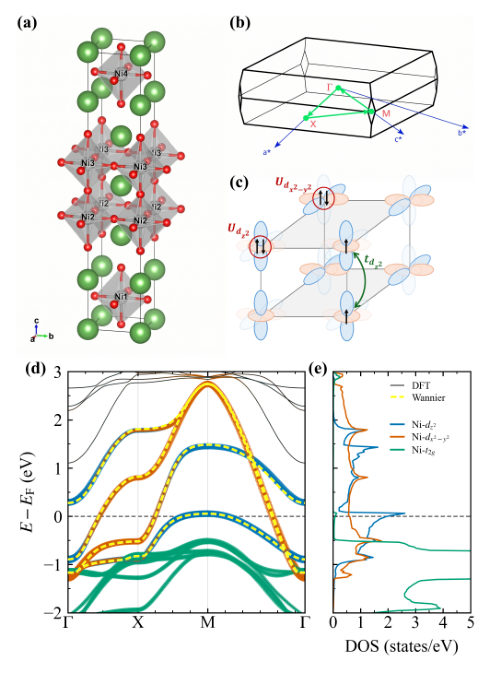
<figcaption class="paper-figure-caption"><b>Fig 1.</b> FIG. 1. Representative crystal and orbital-resolved elec- tronic structures of La3Ni2O7 at 14.1 GPa. (a) Conven- tional cell of the I4/mmm phase of La3Ni2O7, visualized us- ing VESTA [54]. (b) Brillouin zone and high-symmetry path generated using XCrySDen [55]. (c) Schematic illustration of the bilayer two-orbital model. (d) DFT band structure pro- jected onto the Ni dz2, Ni dx2−y2, and Ni t2g orbitals. The yellow dashed lines denote the Wannier-interpolated bands. (e) Orbital-projected density of states. The Fermi level is set to zero.</figcaption>
</figure>
<figure class="paper-figure-card">
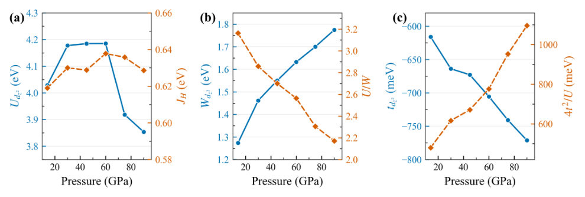
<figcaption class="paper-figure-caption"><b>Fig 2.</b> FIG. 2. Pressure evolution of the cRPA interaction parameters and related electronic energy scales in La3Ni2O7. (a) Screened on-site Coulomb interaction Udz2 for the Ni dz2 orbital and Hund’s exchange interaction JH between the Ni dz2 and dx2−y2 orbitals. (b) Bandwidth Wdz2 of the Ni dz2 bonding states and the corresponding relative correlation strength Udz2 /Wdz2 . (c) Interlayer hopping matrix element tdz2 between two Ni dz2 orbitals sharing the same inner apical O atom, together with the estimated superexchange energy scale 4t2 dz2 /Udz2 .</figcaption>
</figure>
<figure class="paper-figure-card">
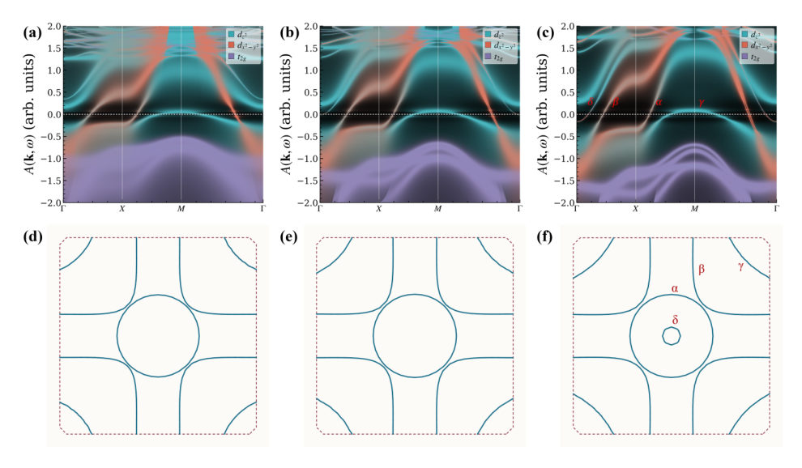
<figcaption class="paper-figure-caption"><b>Fig 3.</b> FIG. 3. DFT+DMFT electronic structure of La3Ni2O7 at T = 80 K using the pressure-dependent U and JH parameters obtained from cRPA. (a)–(c) Momentum-resolved spectral functions at 14.1, 45, and 75 GPa, respectively. (d)–(f) Corresponding Fermi- surface sections at the same pressures.</figcaption>
</figure>
<figure class="paper-figure-card">
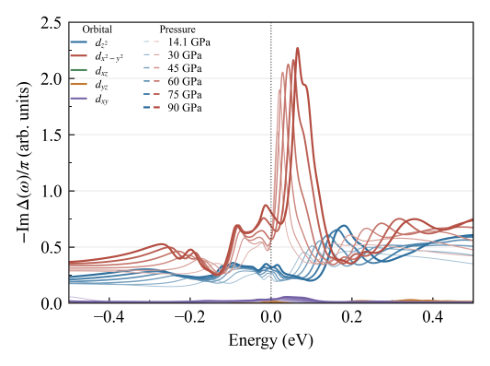
<figcaption class="paper-figure-caption"><b>Fig 4.</b> FIG. 4. Orbital-resolved hybridization function −Im∆(ω)/π of the Ni d orbitals in La3Ni2O7 under pressure from 14.1 to 90 GPa. The vertical dashed line marks the Fermi level.</figcaption>
</figure>
<figure class="paper-figure-card">
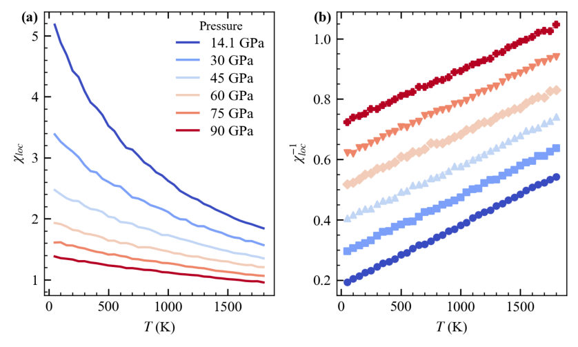
<figcaption class="paper-figure-caption"><b>Fig 5.</b> FIG. 5. Temperature dependence of the local spin response in La3Ni2O7 under pressure. (a) Static local spin susceptibility χloc as a function of temperature. (b) Inverse local spin susceptibility χ−1 loc and the corresponding Curie-Weiss fits. The dashed lines denote fits over the temperature range 50∼1800 K.</figcaption>
</figure>
</div>

<p><strong>Summary.</strong> This work investigates how high pressure alters the electronic and magnetic correlations in superconducting nickelate La3Ni2O7 using advanced many-body techniques like DMFT. The key finding is that increased itinerancy, specifically in the $d_{x^2-y^2}$ orbitals, enhances Kondo screening at the expense of superexchange coupling. This mechanism provides a microscopic explanation for the observed dome-shaped superconducting phase diagram.</p>
<p><strong>Why it may be interesting.</strong> While focused on solid-state physics, the concept of orbital-selective renormalization and the competition between different types of electronic interactions (superexchange vs. Kondo screening) provides a rich theoretical framework applicable to understanding strongly correlated quantum materials in general.</p>
<details>
<summary>Detailed structure</summary>
<p><strong>Main problem.</strong> The study aims to elucidate the microscopic mechanism governing the pressure-dependent superconducting transition temperature (Tc) in bilayer nickelate La3Ni2O7.</p>
<p><strong>Main result.</strong> The decrease of Tc at high pressures is attributed to the dominance of Kondo screening over superexchange interactions, driven by orbital-selective itinerancy where Ni dx2-y2 states become more itinerant.</p>
<p><strong>Method.</strong> The research employs a combination of Density-Functional Theory (DFT), Constrained Random Phase Approximation (cRPA), and Dynamical Mean-Field Theory (DMFT) calculations.</p>
<p><strong>Model / system.</strong> The system is the bilayer nickelate La3Ni2O7, modeled using an effective extended Heisenberg Hamiltonian for magnetic interactions. The electronic structure analysis focuses on Ni 3d orbitals ($d_{z^2}$ and $d_{x^2-y^2}$).</p>
<p><strong>Key observables.</strong> Superconducting transition temperature (Tc), orbital spectral weight redistribution, Kondo screening strength, and the effective magnetic exchange coupling (Jeff).</p>
<p><strong>Important parameters / regimes.</strong> Hydrostatic pressure (up to 90 GPa), correlation parameters (U/W), and interlayer hopping elements ($t_{d_{z^2}}$).</p>
<p><strong>Assumptions / limitations.</strong> The calculations rely on approximations inherent to cRPA and DMFT, such as neglecting certain off-diagonal hybridization function elements.</p>
<p><strong>Figures summary.</strong> Figures illustrate orbital-resolved spectral weight redistribution, valence-state histograms showing charge fluctuations, and the pressure dependence of quasiparticle renormalization factors ($Z^{-1}$).</p>
<p><strong>Paper structure.</strong> The paper systematically analyzes how hydrostatic pressure modifies electronic structure (DFT/DMFT) leading to changes in correlation strength and hybridization. This evolution is then linked microscopically to the suppression of magnetic exchange coupling ($    ext{Jeff}$) and the resulting superconducting phase diagram.</p>
</details>
<details>
<summary>Abstract</summary>
<p>The recent discovery of high-temperature superconductivity in pressurized bilayer La3Ni2O7 has sparked intense research interest, yet the microscopic mechanism governing its pressure-dependent superconducting transition temperature (Tc) remains elusive. In this work, we investigate the electronic and magnetic correlations of La3Ni2O7 under high pressure using a combination of density-functional theory (DFT), constrained random phase approximation (cRPA), and dynamical mean-field theory (DMFT). We find that while hydrostatic pressure enhances the interlayer hopping and the bare superexchange energy scale (4t2/U), it simultaneously drives the system toward a more itinerant regime by reducing the relative correlation strength (U/W). Crucially, our results reveal a distinct orbital-selective evolution: the Ni dx2-y2 states become increasingly itinerant, whereas the Ni dz2 orbitals retain a more localized character. This pressure-induced itinerancy significantly enhances the hybridization between the two, leading to a dramatic amplification of the Kondo-like screening of the local dz2 moments by the itinerant dx2-y2 electrons. Consequently, the effective magnetic exchange coupling (Jeff), which serves as the pairing glue, is suppressed in the high-pressure regime. Our findings suggest that the monotonic decrease of Tc at high pressures is driven by the dominance of Kondo screening over superexchange interactions, providing a coherent microscopic explanation for the dome-shaped superconducting phase diagram in La3Ni2O7.</p>
</details>
<p><sub><a href="#top">↑ back to top</a></sub></p>

<p><a id="paper-2608.01022"></a></p>
<h3 id="spin-orbit-entangled-frustrated-magnetism-in-fcc-bamath812mathybndnbomath813math-double-perovskites"><a href="http://arxiv.org/abs/2608.01022v1">Spin-orbit-entangled frustrated magnetism in fcc Ba$_2$(Yb,Nd)NbO$_6$ double perovskites</a></h3>
<p><strong>Authors:</strong> S. M. Hossain, Sk. Soyeb Ali, S. Mohanty, R. Kolay, M. P. Saravanan, A. K. Yogi, Y. Tokiwa, R. Nath, S. K. Panda, M. Majumder<br>
<strong>Type:</strong> both · <strong>Category:</strong> strongly correlated electrons · <strong>PDF:</strong> <a href="https://arxiv.org/pdf/2608.01022v1">https://arxiv.org/pdf/2608.01022v1</a><br>
<strong>Analysis basis:</strong> full PDF text, analyzed in chunks
<strong>Topic relevance:</strong> <code>analog quantum simulation</code> <strong>3/5</strong> · <code>exotic spin models in light-matter</code> <strong>3/5</strong></p>
<div class="figure-strip-hint">↔ Scroll figures horizontally</div>
<div class="paper-figures-scroll">
<figure class="paper-figure-card">
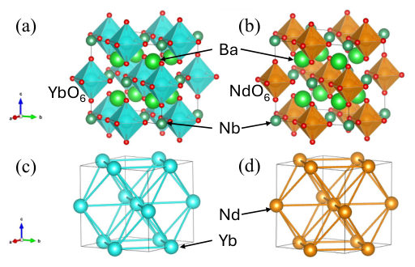
<figcaption class="paper-figure-caption"><b>Fig 1.</b> FIG. 1. (a)-(b) Crystal structure of Ba2YbNbO6 and Ba2NdNbO6 with cubic symmetry space group Fm-3m. The cyan and golden coloured octahedron formed by the RE ions, Yb and Nd, respectively, with six O atoms in red dots. (c)- (d) The arrangement of magnetic RE ions, Yb and Nd, in a fcc lattice geometry.</figcaption>
</figure>
<figure class="paper-figure-card">
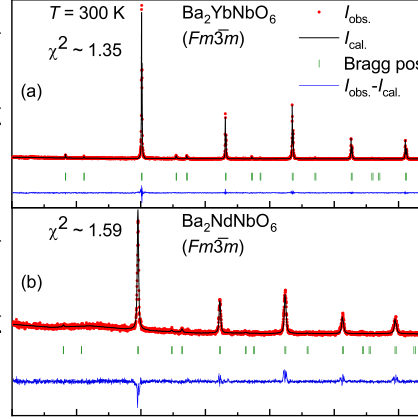
<figcaption class="paper-figure-caption"><b>Fig 2.</b> FIG. 2. (a)-(b) Rietveld refinement of the room-temperature PXRD patterns of Ba2YbNbO6 and Ba2NdNbO6, respec- tively. Red dots represent the observed intensities, and the black solid line shows the calculated PXRD pattern. The green bar symbols represent the Bragg peak positions corre- sponding to the calculated pattern. A difference between the Rietveld fit of the calculated PXRD profile and the observed intensity is shown by the blue solid line. χ2 value indicates the quality of goodness-of-fit of the Rietveld refinement.</figcaption>
</figure>
<figure class="paper-figure-card">
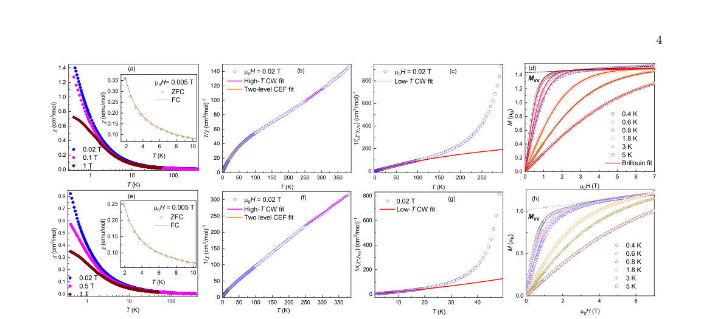
<figcaption class="paper-figure-caption"><b>Fig 3.</b> FIG. 3. (a) and (e): Temperature-dependent magnetic susceptibility (χ ≡M/H) from 0.4 K to 400 K measured at different applied magnetic fields (0.02 T, 0.1 T, and 1 T) for Ba2YbNbO6 and (0.02 T, 0.5 T, and 1 T) for Ba2NdNbO6, respectively. Insets showing the absence of spin frozen like transitions (b) and (f). Inverse susceptibility data fitted with the Curie-Weiss law in the high temperature limit, and the low temperature fit shows the two-level CEF fit. (c) and (g): The low temperature Curie-Weiss fit to [1/(χ −χV V )], for Ba2YbNbO6 and Ba2NdNbO6, respectively. (d) and (f): Isothermal magnetization (M vs H) at various temperatures (0.4 K to 5 K), exhibiting no hysteresis and a tendency...</figcaption>
</figure>
<figure class="paper-figure-card">
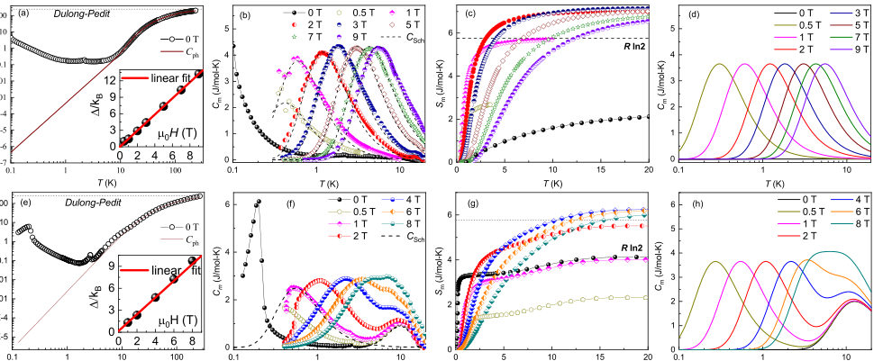
<figcaption class="paper-figure-caption"><b>Fig 4.</b> FIG. 4. (a) and (e) Zero-field heat capacity (Cp) (black open circles) of Ba2YbNbO6 and Ba2NdNbO6, respectively, with lattice contribution (Cph) (solid bordeaux line), inset showing the linear-field dependence of the Schottky gap (∆/kB). (b) and (f) Magnetic heat capacity (Cmag) at zero field and applied fields (0.5 T to 9 T), fitted with Schottky function due to Zeeman splitting of the jeff= 1/2 doublet. Cmag for Ba2NdNbO6 reveals a sharp increase at low temperatures, indicative of long- range magnetic ordering (TN = 200 mK) at zero-field. (c) and (g) Magnetic entropy change ∆Smag obtained by integrating Cmag/T vs T, saturating towards Rln2 with an applied field of 1 T and higher for...</figcaption>
</figure>
<figure class="paper-figure-card">
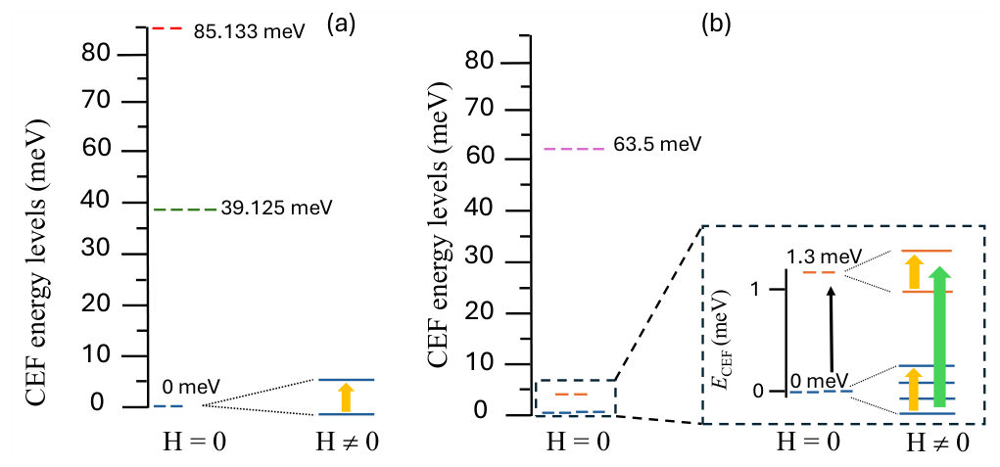
<figcaption class="paper-figure-caption"><b>Fig 5.</b> FIG. 5. Energy level schemes due to CEF effect at zero applied field (H = 0) for (a) Ba2YbNbO6 (0 meV, 39.12 meV, and 91.88 meV) and (b) Ba2NdNbO6 (0 meV, 1.3 meV, and 63.5 meV) obtained using point charge calculations. In the presence of a magnetic field (H ̸= 0), the degeneracy of the lowest Kramers levels is lifted by Zeeman splitting, and the arrows indicate the CEF transitions between the states corresponding to the Schottky peaks in the heat capacity data.</figcaption>
</figure>
</div>

<p><strong>Summary.</strong> The authors investigate $  ext{Ba}<em ext_eff="ext{eff">2(  ext{Yb},    ext{Nd})    ext{NbO}_6$, rare-earth double perovskites, as potential Kitaev magnets. They use combined DFT and experimental techniques to show that strong spin-orbit coupling stabilizes a $   ext{j}</em>=1/2$ ground state in an fcc lattice. The findings establish these materials as promising candidates for studying frustrated magnetism driven by single-ion anisotropy.}</p>
<p><strong>Why it may be interesting.</strong> This work bridges concepts from strongly correlated electron physics (Kitaev model) into the realm of $4f$ rare-earth oxides, providing a new platform to study SOC-driven quantum magnetic phenomena relevant to topological materials research.</p>
<details>
<summary>Detailed structure</summary>
<p><strong>Main problem.</strong> The research investigates spin-orbit-entangled frustrated magnetism in rare-earth double perovskites, aiming to find candidates for Kitaev physics beyond traditional 4d/5d materials.</p>
<p><strong>Main result.</strong> The compounds $    ext{Ba}_2   ext{YbNbO}_6$ and $ ext{Ba}_2   ext{NdNbO}_6$ are identified as promising rare-earth spin-orbit-entangled magnets exhibiting long-range magnetic order with moderate frustration at low temperatures.</p>
<p><strong>Method.</strong> The study combines experimental measurements (magnetization, heat capacity) with advanced theoretical calculations using DFT+U+SOC to model the electronic structure and exchange interactions.</p>
<p><strong>Model / system.</strong> The physical system is based on rare-earth double perovskites ($    ext{Ba}<em ext_eff="ext{eff">2(  ext{Yb},    ext{Nd})    ext{NbO}_6$) crystallizing in an fcc structure, where strong SOC stabilizes isolated $  ext{j}</em>=1/2$ Kramers doublet ground states.}</p>
<p><strong>Key observables.</strong> Magnetization vs. Temperature/Field ($\chi(T), M(H)$), Heat Capacity ($C/T$), Crystal Electric Field (CEF) energy gaps, and calculated magnetic exchange tensors.</p>
<p><strong>Important parameters / regimes.</strong> Low temperatures (millikelvin regime), $    ext{j}_{    ext{eff}}=1/2$ ground state, SOC strength, and frustration parameters related to Kitaev interactions.</p>
<p><strong>Assumptions / limitations.</strong> The analysis relies on the assumption that strong SOC and CEF effects dominate the low-energy physics, leading to isolated Kramers doublets. DFT calculations use $  ext{GGA}+   ext{U}$ approximations.</p>
<p><strong>Figures summary.</strong> Figures illustrate crystal structures showing the fcc arrangement of RE ions; PXRD patterns confirm phase purity; magnetization/heat capacity data reveal magnetic ordering signatures at very low temperatures.</p>
<p><strong>Paper structure.</strong> The paper progresses from establishing the structural and electronic ground state via DFT calculations, to characterizing the magnetic behavior using bulk measurements (magnetization, heat capacity), and finally interpreting these results in the context of frustrated magnetism and Kitaev physics.</p>
</details>
<details>
<summary>Abstract</summary>
<p>The search for candidate Kitaev materials has largely focused on 4$d$ and 5$d$ transition-metal compounds with various lattice geometries. In contrast, investigations of rare-earth 4$f$ systems have thus far been restricted mainly to honeycomb and triangular lattices. In this work, we investigate the rare-earth-based double perovskites Ba$_2$YbNbO$_6$ and Ba$_2$NdNbO$_6$, which crystallize in a face-centered cubic structure. Magnetization and heat-capacity measurements establish isolated ${j_{\rm eff}} = 1/2$ Kramers doublet ground states arising from strong spin-orbit coupling (SOC) and crystal electric-field effects, which are further supported by density-functional theory calculations. Millikelvin-temperature thermodynamic measurements reveal long-range magnetic order with moderate frustration in both compounds. The emergence of magnetic order may be understood within an order-by-disorder scenario, as theoretically proposed for rare-earth fcc lattices with finite Kitaev interactions. Our results thus identify Ba$_2$YbNbO$_6$ and Ba$_2$NdNbO$_6$ as promising rare-earth spin-orbit-entangled magnets and motivate further experimental and theoretical investigations aimed at determining the complete exchange tensor to elucidate the microscopic origin of the underlying magnetic interactions.</p>
</details>
<p><sub><a href="#top">↑ back to top</a></sub></p>

<p><a id="paper-2608.02333"></a></p>
<h3 id="finite-syndrome-compression-of-quantum-fisher-information"><a href="http://arxiv.org/abs/2608.02333v1">Finite-Syndrome Compression of Quantum Fisher Information</a></h3>
<p><strong>Authors:</strong> Jianqi Sheng<br>
<strong>Type:</strong> theory · <strong>Category:</strong> quantum information and computing · <strong>PDF:</strong> <a href="https://arxiv.org/pdf/2608.02333v1">https://arxiv.org/pdf/2608.02333v1</a><br>
<strong>Analysis basis:</strong> full PDF text, analyzed in chunks
<strong>Topic relevance:</strong> <code>quantum measurements</code> <strong>3/5</strong> · <code>entanglement &amp; information structure</code> <strong>1/5</strong> · <code>measurement-induced transitions</code> <strong>1/5</strong></p>
<div class="figure-strip-hint">↔ Scroll figures horizontally</div>
<div class="paper-figures-scroll">
<figure class="paper-figure-card">
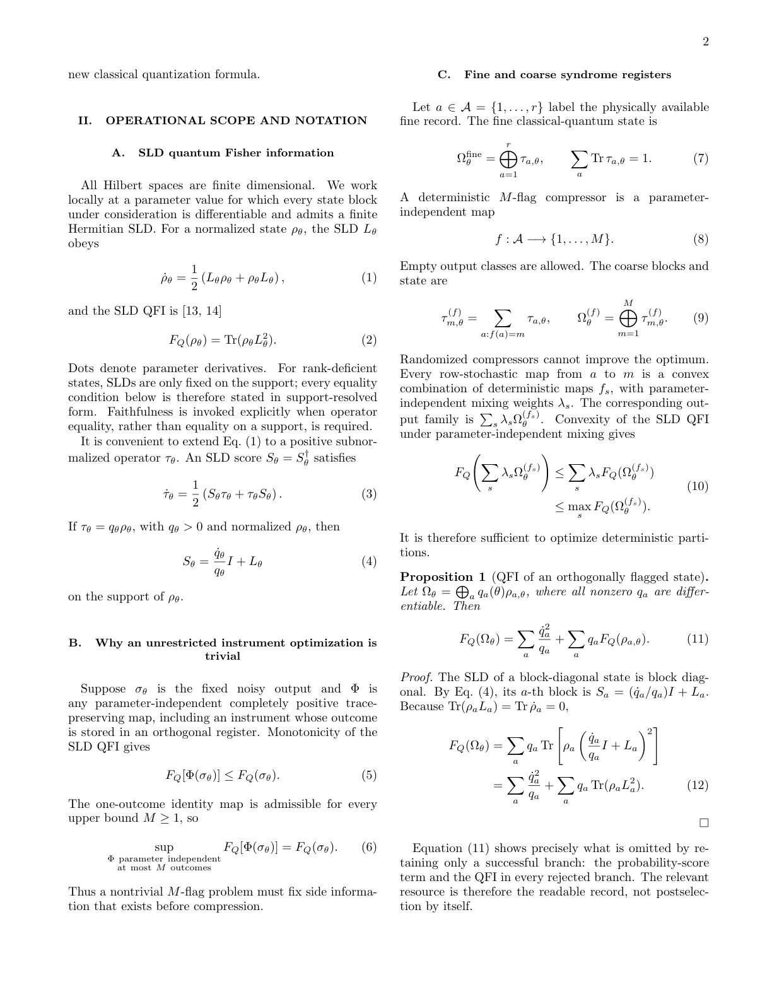
<figcaption class="paper-figure-caption"><b>Fig 1.</b> Low-resolution page preview, page 2</figcaption>
</figure>
<figure class="paper-figure-card">
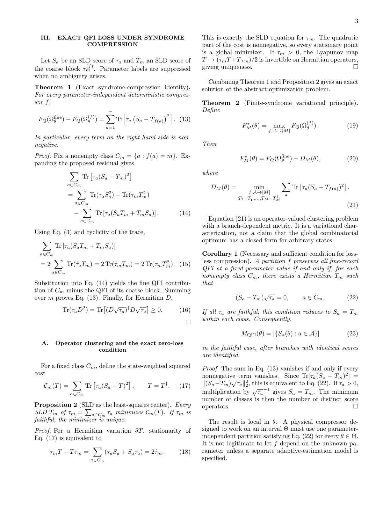
<figcaption class="paper-figure-caption"><b>Fig 2.</b> Low-resolution page preview, page 3</figcaption>
</figure>
<figure class="paper-figure-card">
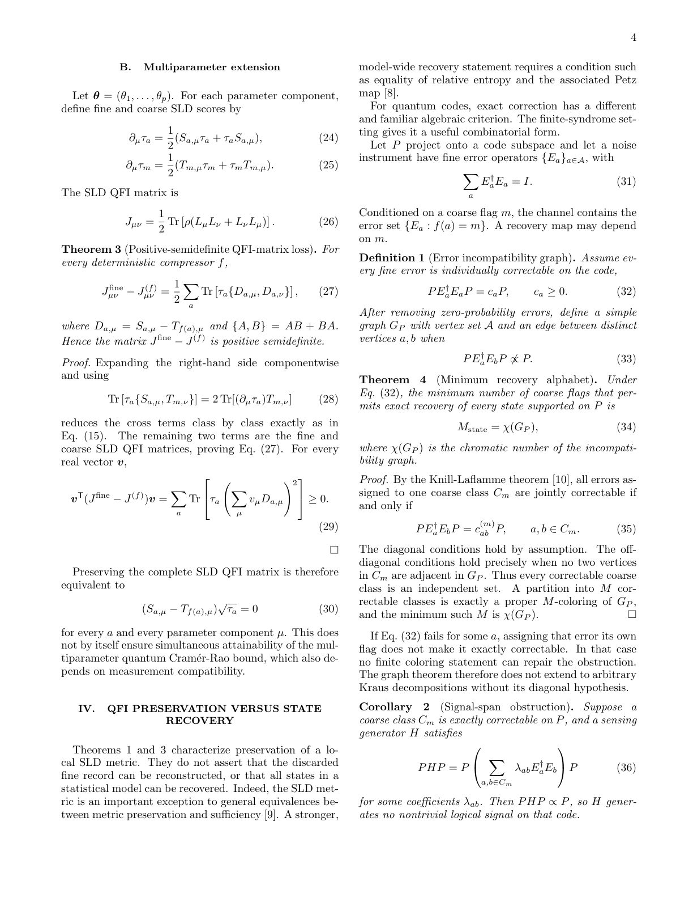
<figcaption class="paper-figure-caption"><b>Fig 3.</b> Low-resolution page preview, page 4</figcaption>
</figure>
<figure class="paper-figure-card">
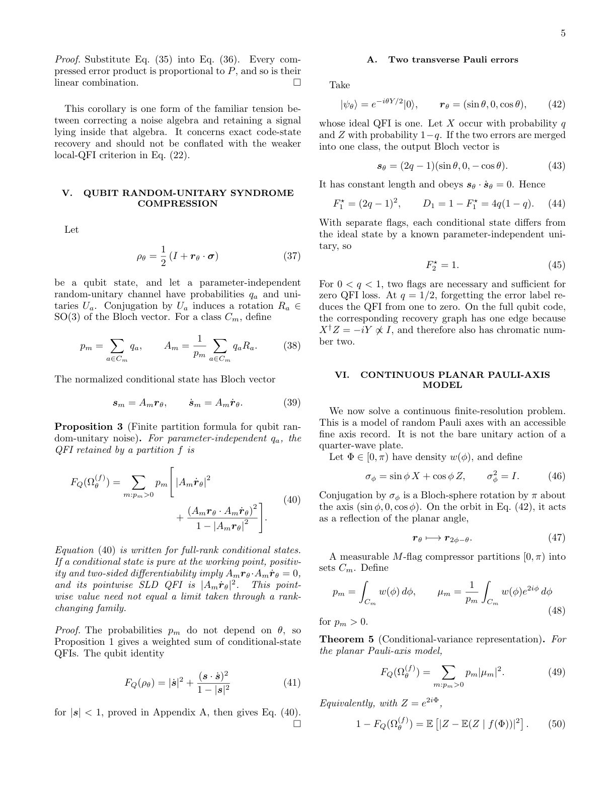
<figcaption class="paper-figure-caption"><b>Fig 4.</b> Low-resolution page preview, page 5</figcaption>
</figure>
<figure class="paper-figure-card">
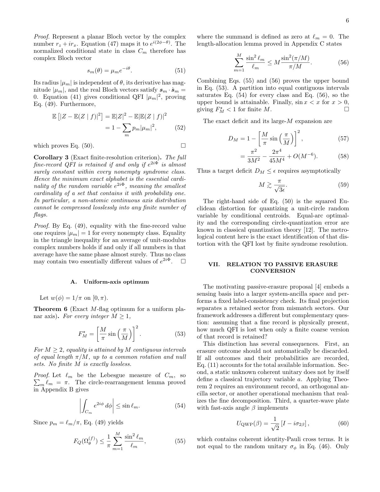
<figcaption class="paper-figure-caption"><b>Fig 5.</b> Low-resolution page preview, page 6</figcaption>
</figure>
</div>

<p><strong>Summary.</strong> This theoretical paper quantifies the fundamental trade-off between measurement resolution and achievable quantum sensing precision. It proves an exact identity showing that QFI loss due to syndrome compression equals a measurable mismatch between fine and coarse information estimates. The results establish necessary conditions for lossless encoding, linking it to graph theory (chromatic number) in code settings.</p>
<p><strong>Why it may be interesting.</strong> It provides rigorous information-theoretic bounds on sensing precision when measurement resources are limited, which is crucial for designing practical quantum sensors that must operate with finite detectors.</p>
<details>
<summary>Detailed structure</summary>
<p><strong>Main problem.</strong> The paper addresses how much Quantum Fisher Information (QFI) is unavoidably lost when compressing a fine-grained quantum measurement record into a finite set of measurable syndrome flags.</p>
<p><strong>Main result.</strong> It derives an exact identity quantifying this QFI loss, showing that optimal compression is equivalent to solving an operator-valued clustering problem.</p>
<p><strong>Method.</strong> The authors use the Symmetric-Logarithmic-Derivative (SLD) Quantum Fisher Information as a diagnostic tool and establish variational principles relating the achievable QFI to squared distances between fine and coarse SLD scores.</p>
<p><strong>Model / system.</strong> The analysis is general, focusing on quantum sensing protocols where noise creates distinguishable but observationally mixed trajectories. Specific models include qubit random-unitary noise and planar random-Pauli axes.</p>
<p><strong>Key observables.</strong> Symmetric-Logarithmic-Derivative Quantum Fisher Information (SLD QFI), the minimum number of readable syndromes ($\chi(G_P)$), and the QFI deficit ($D_M$).</p>
<p><strong>Important parameters / regimes.</strong> The finite number of syndrome flags, $M$, which dictates the compression level.</p>
<p><strong>Assumptions / limitations.</strong> The analysis fixes the fine-grained record and assumes parameter-independent classical compression; it also notes that SLD preservation is a local condition weaker than full statistical model recovery.</p>
<p><strong>Figures summary.</strong> Not specified in the provided notes, but the structure implies mathematical derivations leading to explicit formulas for QFI loss (e.g., $F_M^{\star}=[M\sin(\pi/M)/\pi]^2$).</p>
<p><strong>Paper structure.</strong> The paper builds from establishing an exact identity quantifying QFI loss due to finite syndrome resolution, showing this maps the problem to operator-valued clustering. It then applies this framework to specific physical models (e.g., quantum codes, planar axes) to derive concrete bounds and necessary conditions for lossless compression.</p>
</details>
<details>
<summary>Abstract</summary>
<p>Readable error records can protect quantum sensing because they prevent physically distinct noise trajectories from being irreversibly mixed. A finite detector or ancilla, however, can retain only finitely many syndrome values, and a general criterion for deciding which records may be merged without losing metrological information is absent. We formulate the problem for a fixed fine-grained classical-quantum record and parameter-independent compression into at most $M$ flags. We prove an exact identity expressing the lost symmetric-logarithmic-derivative quantum Fisher information (SLD QFI) as a sum of state-weighted squared distances between fine and coarse SLD scores. Consequently, optimal finite-syndrome design is exactly an operator-valued clustering problem, and zero loss is characterized by a support-resolved common-SLD condition. We extend the identity to the full multiparameter SLD QFI matrix and distinguish local QFI preservation from recovery of an entire statistical model. For exact recovery of a quantum code, we separately show that, when each fine error is individually correctable, the minimum number of readable syndromes is the chromatic number of a Knill-Laflamme incompatibility graph. For qubit random-unitary noise we obtain a finite partition formula. A planar random-Pauli model admits a conditional-variance representation and, for a uniform error axis, the exact optimum $F_M^{\star}=[M\sin(π/M)/π]^2$, with deficit $π^2/(3M^2)+O(M^{-4})$. These results identify the information-theoretic cost of finite syndrome resolution while making explicit the side-information assumptions required for any passive noise-to-erasure interpretation.</p>
</details>
<p><sub><a href="#top">↑ back to top</a></sub></p>

<p><a id="paper-2608.00809"></a></p>
<h3 id="from-minimal-informationally-complete-measurements-to-orthocentric-simplices-and-back-again"><a href="http://arxiv.org/abs/2608.00809v1">From minimal informationally complete measurements to orthocentric simplices and back again</a></h3>
<p><strong>Authors:</strong> Piotr Bereza, Wojciech Słomczyński, Anna Szymusiak<br>
<strong>Type:</strong> theory · <strong>Category:</strong> other · <strong>PDF:</strong> <a href="https://arxiv.org/pdf/2608.00809v1">https://arxiv.org/pdf/2608.00809v1</a><br>
<strong>Analysis basis:</strong> full PDF text, analyzed in chunks
<strong>Topic relevance:</strong> <code>quantum measurements</code> <strong>3/5</strong> · <code>entanglement &amp; information structure</code> <strong>1/5</strong> · <code>measurement-induced transitions</code> <strong>1/5</strong></p>
<div class="figure-strip-hint">↔ Scroll figures horizontally</div>
<div class="paper-figures-scroll">
<figure class="paper-figure-card">
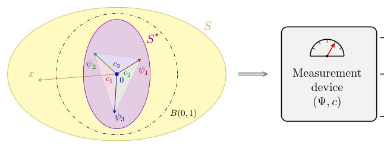
<figcaption class="paper-figure-caption"><b>Fig 1.</b> Figure 1: Conceptual geometric representation of states and measurements in V0. The compact convex set of states S contains 0 in its interior. The measurement vectors ψj belong to the polar dual S⋆and satisfy the closure condition, meaning the origin lies strictly within their convex hull. For a minimal measurement c is uniquely determined by Ψ and serves as the set of barycentric coordinates of the origin with respect to Ψ. Crucially, in this case barycentric coordinates admit a direct spatial interpretation: each cj is the ratio of the hypervolume of the sub-simplex formed by the origin and the facet opposite to ψj to the total volume of the measurement simplex.</figcaption>
</figure>
<figure class="paper-figure-card">
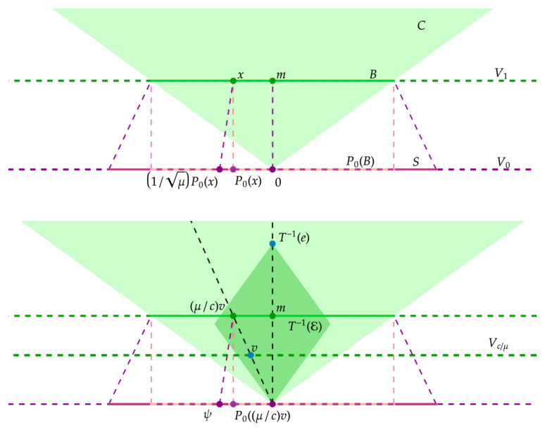
<figcaption class="paper-figure-caption"><b>Fig 2.</b> Figure 2: Above: The standard description of states is by a convex base B of a cone C. In our approach states are projected from V1 = aff B to the corresponding linear subspace V0 and then rescaled by 1/√µ in order to make the theory independent of the norm of the distinguished state m. Below: The effects can be transferred from the dual space to the space V via the unique isometric isomorphism T −1. An effect g mapped by T −1 to v can be uniquely represented by the ray containing it and the affine subspace Vc/µ parallel to V0, where c = g(m). Instead of the whole ray we can consider its intersection with V1, i.e., the point (µ/c)v, and, in consequence, the whole information about the...</figcaption>
</figure>
<figure class="paper-figure-card">
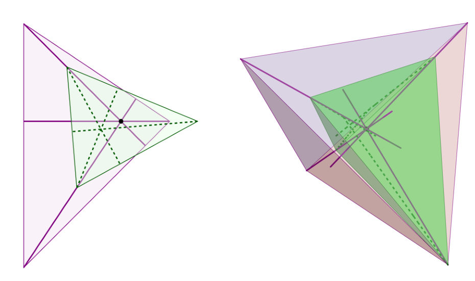
<figcaption class="paper-figure-caption"><b>Fig 3.</b> Figure 3: The vertices of the green triangle conv Ψ, whose orthocentre does not coincide with the origin, can be rescaled to obtain the purple triangle conv( s2</figcaption>
</figure>
<figure class="paper-figure-card">
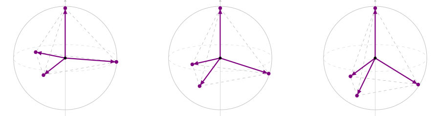
<figcaption class="paper-figure-caption"><b>Fig 4.</b> Figure 4: Three examples of axially symmetric measurements, represented as the tetrahedra conv Ψ for z0 = −0.1 (close to the flat limit), z0 = −1/3 (SIC-POVM) and z0 = −0.55 (close to the obtuse angle limit).</figcaption>
</figure>
<figure class="paper-figure-card">
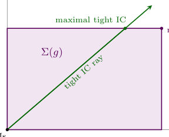
<figcaption class="paper-figure-caption"><b>Fig 5.</b> Figure 5: Anatomy of the family of minimal s-tight IC measurements generated by a fixed acute orthocentric simplex (Theorem 16), drawn schematically in the lengths λ1, . . . , λd+1 of the measurement vectors (two of the coordinates shown). For a fixed anchoring g of the directions the admissible lengths fill a box Σ(g) determined by S⋆(shaded); the tight IC measurements (c = p, Corollary 18) form a ray, which leaves the box at the maximal tight IC measurement, while the outer corner marks the maximal simplex, at which all lengths attain their bounds simultaneously; the white noise POVMs sit in the degenerate limit λ →0, which is not itself a member of the family (the limiting measurements...</figcaption>
</figure>
</div>

<p><strong>Summary.</strong> This theoretical paper connects the operational concept of minimal informationally complete measurements in Generalized Probabilistic Theories to classical Euclidean geometry. It proves that these 'tight' measurements are characterized by their associated vectors forming an acute orthocentric simplex. This establishes a deep, quantifiable link between optimal physical measurement procedures and fundamental geometric structures.</p>
<p><strong>Why it may be interesting.</strong> While not directly about AMO systems, this work provides a powerful mathematical framework for characterizing optimal measurement strategies in any physical theory (including quantum mechanics) purely through geometric constraints on the state space.</p>
<details>
<summary>Detailed structure</summary>
<p><strong>Main problem.</strong> The paper establishes a deep geometric correspondence between minimal informationally complete measurements (MICs) in Generalized Probabilistic Theories (GPTs) and the classical geometry of acute orthocentric simplices.</p>
<p><strong>Main result.</strong> It proves a three-way equivalence: an MIC is $s$-tight if and only if its rescaled measurement vectors form the vertices of an acute orthocentric simplex centered at the origin, which must also be homothetically self-dual.</p>
<p><strong>Method.</strong> The authors use intrinsic geometric approaches to GPTs, relating operational constraints (like 'tightness') to specific algebraic conditions on the measurement vectors ($\Psi$) and outcome probabilities ($c$).</p>
<p><strong>Model / system.</strong> The study is set within Generalized Probabilistic Theories (GPTs), which generalize quantum mechanics by defining states as a convex body $S$ in a vector space $V_0$. The focus is on minimal IC measurements, which require exactly $d+1$ outcomes.</p>
<p><strong>Key observables.</strong> Measurement vectors ($\Psi$), outcome probabilities ($c$), and the resulting geometric structure (acute orthocentric simplex).</p>
<p><strong>Important parameters / regimes.</strong> The dimension of the state space ($d+1$), the skeleton probability vector ($P \in \Delta^{\circ}_{d+1}$), and the scaling factor $A$.</p>
<p><strong>Assumptions / limitations.</strong> The analysis assumes a finite-dimensional setting, relies on specific definitions for the fiducial scalar product $\langle x, y 
angle_{P,A}$, and makes assumptions about the structure of the GGPT (e.g., supra-duality).</p>
<p><strong>Figures summary.</strong> Figure 1 conceptually illustrates states ($S$), measurement vectors ($\psi_j$), and how probabilities $c$ are determined via barycentric coordinates.</p>
<p><strong>Paper structure.</strong> The paper develops from defining MICs in GGPTs, establishing the geometric link to orthocentric simplices through necessary conditions (obtuse angles, cross-ratio), culminating in the main equivalence theorem that parameterizes the space of such measurements by $\Delta^{\circ}_{d+1}$.</p>
</details>
<details>
<summary>Abstract</summary>
<p>The reconstruction of unknown quantum states via minimal informationally complete measurements (MICs) is a cornerstone of quantum tomography. Although the statistical properties of these measurements are well-understood, their geometric structure has remained elusive. In this work, we establish a correspondence between the class of minimal $s$-tight informationally complete measurements, encompassing, among others, tight IC and morphophoric measurements, and the classical geometry of orthocentric simplices. In particular, we prove a three-way equivalence: a MIC is $s$-tight if and only if its measurement vectors, upon suitable rescaling, form the vertices of an acute orthocentric simplex with the orthocentre at the origin, and such simplices are precisely the homothetically self-dual ones. This geometric manifestation of operational ''tightness'' provides a bridge between the physical world and Euclidean geometry. Furthermore, the $s$-tight class is fully characterised by its measurement directions: the angles between them must be obtuse and satisfy a cross-ratio condition. We determine the space of admissible direction configurations: modulo rotations, every such configuration is encoded by a single probability vector, the ''skeleton'' of the measurement, together with an orientation class, so that the moduli space of $s$-tight MIC directions is $Δ^{\circ}_{d+1}\times\{\pm 1\}$. Conversely, every acute orthocentric simplex with the orthocentre at the origin can be anchored in the state space, generating a class of minimal $s$-tight IC measurements that contains exactly one tight IC measurement up to overall rescaling.</p>
</details>
<p><sub><a href="#top">↑ back to top</a></sub></p>

<p><a id="paper-2608.00469"></a></p>
<h3 id="negative-thermal-expansion-lattice-dynamics-and-complex-magnetism-in-tbfeomath858math"><a href="http://arxiv.org/abs/2608.00469v1">Negative thermal expansion, lattice dynamics, and complex magnetism in TbFeO$_3$</a></h3>
<p><strong>Authors:</strong> Shubham Farswan, Reshma Kumawat, Dipankar Sarkar, Deeksha Singh, Md. Atif Hasan, Devajyoti Mukherjee, Kaushik Sen<br>
<strong>Type:</strong> experiment · <strong>Category:</strong> other · <strong>PDF:</strong> <a href="https://arxiv.org/pdf/2608.00469v1">https://arxiv.org/pdf/2608.00469v1</a><br>
<strong>Analysis basis:</strong> full PDF text, analyzed in chunks
<strong>Topic relevance:</strong> <code>spintronics-quantum-optics interface</code> <strong>3/5</strong> · <code>analog quantum simulation</code> <strong>1/5</strong> · <code>exotic spin models in light-matter</code> <strong>1/5</strong></p>
<div class="figure-strip-hint">↔ Scroll figures horizontally</div>
<div class="paper-figures-scroll">
<figure class="paper-figure-card">
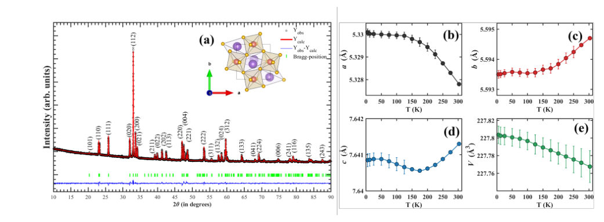
<figcaption class="paper-figure-caption"><b>Fig 1.</b> FIG. 1. Structural refinement of TbFeO3 x-ray diffraction pattern at room temperature. Unit cell, view along the c-axis. Here Tb atoms are shown in purple spheres, Fe atoms as red spheres, and O atoms as yellow spheres (b-d) Temperature evolution of the refined lattice parameters a(T), b(T), and c(T) respectively extracted by Rietveld refinement of temperature-dependent XRD measurements. (e) Temperature dependence of unit-cell volume V (T), indicating negative thermal expansion.The error bars represent the standard uncertainties obtained from the Rietveld refinement.</figcaption>
</figure>
<figure class="paper-figure-card">
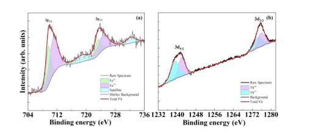
<figcaption class="paper-figure-caption"><b>Fig 2.</b> FIG. 2. High-resolution XPS spectra of the Fe-2p and Tb- 3d core levels of TbFeO3, showing the characteristic spin- orbit split components along with deconvoluted contributions corresponding to Fe2+, Fe3+ and Tb3+, Tb4+ ionic states.</figcaption>
</figure>
<figure class="paper-figure-card">
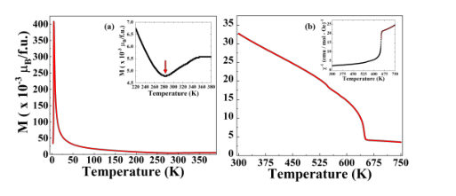
<figcaption class="paper-figure-caption"><b>Fig 3.</b> FIG. 3. Magnetization as a function of temperature for TbFeO3 measured under an applied magnetic field of 500 Oe: (a) low-temperature regime and (b) high-temperature regime. The inset of panel (a) highlights the variation in magnetization in the vicinity of 280 K. The inset of panel (b) shows the inverse magnetic susceptibility fitted using the modified Curie–Weiss expression given in Eq. (3).</figcaption>
</figure>
<figure class="paper-figure-card">
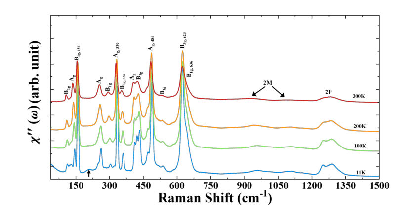
<figcaption class="paper-figure-caption"><b>Fig 4.</b> FIG. 4. Temperature-dependent Raman spectra of polycrystalline TbFeO3 measured at 11, 100, 200, and 300 K. Selected phonon modes are assigned, along with two-phonon (2P) and two-magnon (2M) excitations. The arrow indicates the emergence of a new mode at low temperatures.</figcaption>
</figure>
<figure class="paper-figure-card">
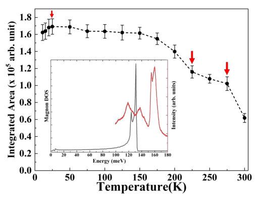
<figcaption class="paper-figure-caption"><b>Fig 5.</b> FIG. 5. Temperature dependence of the integrated intensity of the two-magnon peak in polycrystalline TbFeO3 powder. The inset shows the calculated magnon density of states (MDOS) for the Fe sublattice in TbFeO3, plotted together with the two- magnon Raman spectrum measured at 11 K for comparison.</figcaption>
</figure>
</div>

<p><strong>Summary.</strong> This work comprehensively investigates the physical properties of TbFeO3 by combining XRD, magnetization, and Raman spectroscopy. Key findings include observing negative thermal expansion and identifying strong evidence of spin-phonon coupling through phonon line shape analysis. The results establish that this material exhibits a pronounced interplay between its lattice structure, magnetic order, and local electronic environment.</p>
<p><strong>Why it may be interesting.</strong> The detailed investigation into spin-phonon coupling mechanisms using multiple complementary techniques provides rich data on emergent quantum interactions in insulating magnets, which is relevant for understanding lattice dynamics in correlated materials.</p>
<details>
<summary>Detailed structure</summary>
<p><strong>Main problem.</strong> To investigate the complex interplay among lattice dynamics, spin correlations, and local magnetic anomalies in TbFeO3.</p>
<p><strong>Main result.</strong> The study reveals negative thermal expansion without structural transitions, strong evidence of spin-phonon coupling via Raman scattering, and a clear interplay between lattice and magnetic degrees of freedom.</p>
<p><strong>Method.</strong> A combination of temperature-dependent X-ray diffraction (XRD), DC magnetization measurements, and advanced Raman spectroscopy was employed.</p>
<p><strong>Model / system.</strong> The physical system is the rare-earth orthoferrite TbFeO3, which serves as a model for studying spin-lattice coupling in complex oxides.</p>
<p><strong>Key observables.</strong> Negative thermal expansion (NTE) of unit cell volume, phonon frequencies and line shapes, two-magnon excitations, and magnetic susceptibility/magnetization curves.</p>
<p><strong>Important parameters / regimes.</strong> Temperature range spanning 5 K to 300 K; the crossover from Gaussian to Lorentzian phonon profiles.</p>
<p><strong>Assumptions / limitations.</strong> The analysis assumes that deviations in Raman spectra reflect spin-phonon coupling mechanisms rather than simple anharmonic decay. The interpretation of spectral weight requires careful consideration of background subtraction and fitting models.</p>
<p><strong>Figures summary.</strong> Figures show XRD patterns demonstrating anisotropic unit cell volume changes (NTE), temperature dependence of lattice parameters, and Raman spectra detailing phonon modes and two-magnon excitations across various temperatures.</p>
<p><strong>Paper structure.</strong> The paper systematically combines structural characterization (XRD for NTE) with spectroscopic probes (Raman for phonons/magnons) and magnetic measurements (magnetization). The structure builds the argument by showing how anomalies in one measurement correlate with subtle changes in another, establishing a unified picture of coupled physics.</p>
</details>
<details>
<summary>Abstract</summary>
<p>We report a temperature-dependent investigation of orthoferrite TbFeO$_3$ using x-ray diffraction, DC magnetization, and Raman scattering, complemented by room-temperature x-ray photoelectron spectroscopy. X-ray diffraction reveals negative thermal expansion over 5-300 K, with a small but systematic increase in unit-cell volume upon cooling in the absence of any structural phase transition. Raman scattering measurements identify the Raman-active phonon modes and show clear deviations from the conventional Klemens anharmonic decay model, particularly in phonon frequencies, indicating the presence of spin-phonon coupling. Two modes of $A_g$ and $B_{1g}$ symmetry exhibit a crossover from Gaussian-dominated line shapes at low temperatures to mixed Gaussian-Lorentzian profiles at higher temperatures, reflecting a transition from inhomogeneous broadening to lifetime-driven dynamics. High-energy Raman spectra reveal two-magnon excitations associated with the Fe sublattice, consistent with linear spin-wave theory, whose spectral weight shows only weak temperature dependence. In addition, a broad Raman mode emerging below $\sim 175$ K exhibits an order-parameter-like temperature evolution and coincides with the onset of phonon anomalies, while no corresponding strong anomaly is observed in the two-magnon response. Taken together, these results establish TbFeO$_3$ as a system with pronounced interplay among lattice dynamics, spin correlations, and emergent local magnetic-lattice anomalies.</p>
</details>
<p><sub><a href="#top">↑ back to top</a></sub></p>

<p><a id="paper-2608.01909"></a></p>
<h3 id="optimality-of-gaussian-entanglement-of-formation"><a href="http://arxiv.org/abs/2608.01909v1">Optimality of Gaussian Entanglement of Formation</a></h3>
<p><strong>Authors:</strong> Gerardo Adesso<br>
<strong>Type:</strong> theory · <strong>Category:</strong> quantum information and computing · <strong>PDF:</strong> <a href="https://arxiv.org/pdf/2608.01909v1">https://arxiv.org/pdf/2608.01909v1</a><br>
<strong>Analysis basis:</strong> full PDF text, analyzed in chunks
<strong>Topic relevance:</strong> <code>entanglement &amp; information structure</code> <strong>3/5</strong> · <code>Keldysh / 2PI / non-Gaussian methods</code> <strong>1/5</strong> · <code>quantum optics experiment</code> <strong>1/5</strong></p>
<div class="figure-strip-hint">↔ Scroll figures horizontally</div>
<div class="paper-figures-scroll">
<figure class="paper-figure-card">
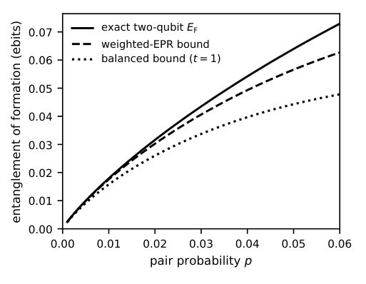
<figcaption class="paper-figure-caption"><b>Fig 1.</b> FIG. 1. Exact entanglement of formation and variance-based lower bounds for the lossy non-Gaussian state in Eq. (23), with ηA = 0.9 and ηB = 0.2. Optimizing the gain t keeps the bound close to the exact two-qubit result throughout the weak-pair regime and substantially improves on the balanced choice t = 1.</figcaption>
</figure>
</div>

<p><strong>Summary.</strong> This paper resolves a major open problem by proving that the Entanglement of Formation for any two-mode Gaussian state equals its simpler Gaussian restriction. The authors achieve this using sophisticated functional inequalities involving generalized EPR observables. This result provides an exact theoretical benchmark and a robust, measurable lower bound for quantifying entanglement in continuous variable systems.</p>
<p><strong>Why it may be interesting.</strong> This work provides fundamental mathematical tools—the affine entanglement–EPR inequality—that bridge continuous variable quantum information theory with measurable physical observables like quadrature variances, which is highly relevant for experimental quantum optics.</p>
<details>
<summary>Detailed structure</summary>
<p><strong>Main problem.</strong> The central problem is proving that for two-mode Gaussian states, the entanglement of formation (EF) exactly equals its Gaussian restriction ($   ext{EG}_F$), resolving a long-standing open question in continuous variable quantum information theory.</p>
<p><strong>Main result.</strong> The authors prove $    ext{EF}(
ho_V) =     ext{EG}_F(V)$ for all two-mode Gaussian states, and extend this result to bisymmetric multimode Gaussian states.</p>
<p><strong>Method.</strong> The proof employs advanced functional analysis techniques, including reducing the optimization problem over Schmidt coefficients using singular value inequalities and applying logarithmic-Sobolev inequalities.</p>
<p><strong>Model / system.</strong> The system under study consists of two-mode quantum states characterized by their covariance matrices ($V$), analyzed in the continuous variable framework (quadratures $x, p$).</p>
<p><strong>Key observables.</strong> Entanglement of Formation ($   ext{EF}$), Gaussian Entanglement of Formation ($  ext{EG}<em Dt>F$), and the generalized Einstein–Podolsky–Rosen (EPR) observable ($b</em>$).</p>
<p><strong>Important parameters / regimes.</strong> The analysis involves optimization over parameters like squeezing factors ($q$) and gain/time parameters ($t$).</p>
<p><strong>Assumptions / limitations.</strong> The method provides an exact result for Gaussian states, but the derived bounds can be applied to arbitrary non-Gaussian mixed states using ensemble averaging.</p>
<p><strong>Figures summary.</strong> Figure 1 compares the exact two-qubit EF against weighted-EPR and balanced bounds for a lossy non-Gaussian state, showing near saturation of the bound.</p>
<p><strong>Paper structure.</strong> The paper develops the theory by establishing necessary inequalities relating $    ext{EF}$ to generalized EPR observables (Theorem 1), proving the equality for Gaussian states, and finally deriving quantitative lower bounds applicable to general mixed states.</p>
</details>
<details>
<summary>Abstract</summary>
<p>We prove that the entanglement of formation of every two-mode Gaussian state coincides with its Gaussian restriction, solving a longstanding open problem in continuous variable quantum information theory. The key result is a sharp affine relation between entanglement and a generalized Einstein-Podolsky-Rosen observable, valid for arbitrary pure two-mode states, including non-Gaussian ones. Our result extends to bisymmetric multimode Gaussian states, and also provides a measurable lower bound on the entanglement of formation of arbitrary non-Gaussian states.</p>
</details>
<p><sub><a href="#top">↑ back to top</a></sub></p>

<p><a id="paper-2608.01248"></a></p>
<h3 id="quantum-sequential-parameter-testing"><a href="http://arxiv.org/abs/2608.01248v1">Quantum sequential parameter testing</a></h3>
<p><strong>Authors:</strong> Simon Morelli, Ricard Ravell Rodríguez, John Calsamiglia, Ramón Muñoz-Tapia, Gael Sentís, Michalis Skotiniotis<br>
<strong>Type:</strong> theory · <strong>Category:</strong> quantum information and computing · <strong>PDF:</strong> <a href="https://arxiv.org/pdf/2608.01248v1">https://arxiv.org/pdf/2608.01248v1</a><br>
<strong>Analysis basis:</strong> full PDF text, analyzed in chunks
<strong>Topic relevance:</strong> <code>quantum measurements</code> <strong>3/5</strong> · <code>entanglement &amp; information structure</code> <strong>1/5</strong> · <code>measurement-induced transitions</code> <strong>1/5</strong></p>
<div class="figure-strip-hint">↔ Scroll figures horizontally</div>
<div class="paper-figures-scroll">
<figure class="paper-figure-card">
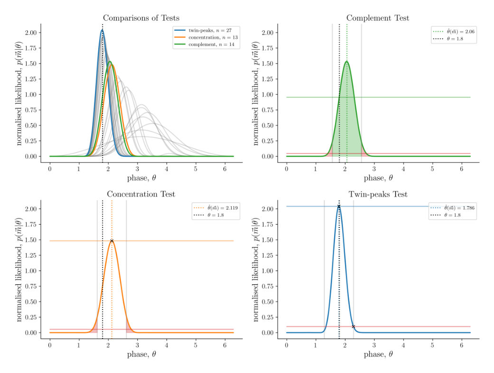
<figcaption class="paper-figure-caption"><b>Fig 1.</b> FIG. 1. The figure shows the three different tests explained in this work. The first image shows the updated normalized likelihood of each round as gray curves, with the three rounds where a test stops highlighted in color. The other three figures show the stopping conditions of the three sequential tests introduced in this work in detail. In green, we see the complement test, where the probability of the parameter lying in the interval is compared to the probability that it lies outside said interval. In orange, the concentration test, where the maximum likelihood is compared to the average likelihood outside a given interval, and in blue, the twin-peaks test, where the maximum likelihood...</figcaption>
</figure>
<figure class="paper-figure-card">
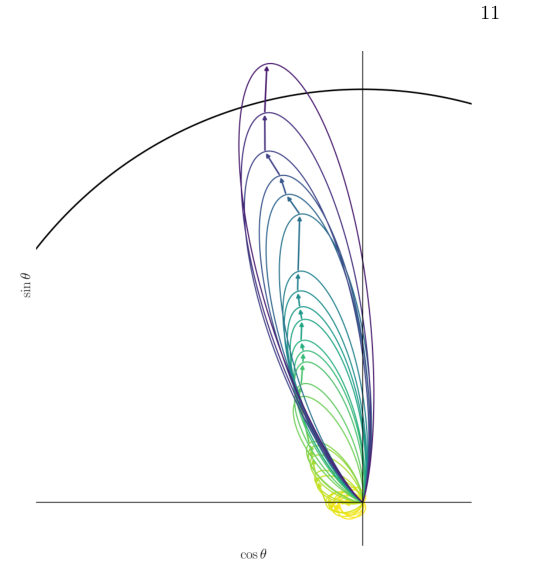
<figcaption class="paper-figure-caption"><b>Fig 2.</b> FIG. 2. One run of the equatorial phase testing protocol according to the twin-peaks test, and choosing a random mea- surement strategy. The plot is made in phase space, where the horizontal (vertical) axis corresponds to cos θ (sin θ). Each ellipse corresponds to one round, with a color gradient from yellow for early rounds to blue for later ones. In each ellipse, the arrow points towards the most likely phase, ˆθ, of that round. The distance between that point and the origin is the likelihood ratio p( ⃗mk ∣ˆθ)/p( ⃗mk ∣θ0), where θ0 is selected as the alternative hypothesis by the twin-peaks test given the interval of size 2δ = 1 around the ML estimate ˆθ. For the rest of the points...</figcaption>
</figure>
<figure class="paper-figure-card">
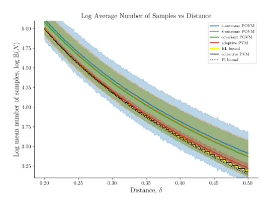
<figcaption class="paper-figure-caption"><b>Fig 3.</b> FIG. 3. Log-plot of the mean number of rounds until the maximum sequential test stops using the evidence threshold Aϵ = 19, corresponding to the calibration ϵ = 0.05. Differ- ent colors represent the different strategies explained in the main text; the lines show the mean number of rounds over 104 runs for the different strategies, with their corresponding standard deviation shown as shadow areas. The 4- and 8- outcome POVMs are shown in blue and orange, respectively, the random projective measurement in green, and the adap- tive measurement in red. The black line represents the col- lective strategy with a fixed number of rounds, and the yel- low line shows the asymptotic stopping time...</figcaption>
</figure>
<figure class="paper-figure-card">
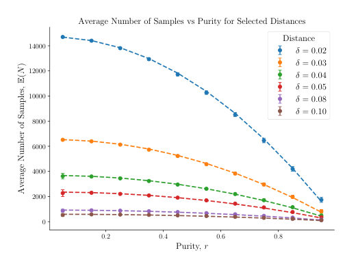
<figcaption class="paper-figure-caption"><b>Fig 4.</b> FIG. 4. Average number of samples required by the twin- peaks test for estimating the purity r of a qubit mixed state ρ using the evidence threshold Aϵ = 19, corresponding to the calibration ϵ = 0.05. The average number of samples is over 100 tests. The error bars correspond to the standard devia- tion. The dotted lines correspond to the average number of samples required in the asymptotic limit (Eq. (72)). In order for the numerical simulations not to run indefinitely, we set a threshold for the number of samples to 15000.</figcaption>
</figure>
<figure class="paper-figure-card">
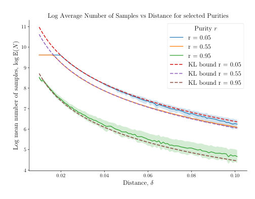
<figcaption class="paper-figure-caption"><b>Fig 5.</b> FIG. 5. Logarithm of the average number of samples required by the twin-peaks test for estimating the purity r of a qubit mixed state ρ as a function of the distance δ. The calibration is ϵ = 0.05. The average number of samples is computed over 100 tests, with the shaded region corresponding to the stan- dard deviation. The dashed lines correspond to the asymp- totic bound of Eq. (72). In order for the numerical simulations not to run indefinitely, we set a threshold for the number of samples to 15000; the flat orange and blue lines show this user-defined threshold value for small values of δ.</figcaption>
</figure>
</div>

<p><strong>Summary.</strong> This paper introduces sequential parameter testing, a framework to estimate unknown continuous parameters in quantum systems by adaptively ruling out incorrect values. It develops the 'twin-peaks test' and applies it successfully to qubit phase and purity estimation. The results demonstrate that this approach offers significant resource savings compared to fixed-size measurement protocols.</p>
<p><strong>Why it may be interesting.</strong> It provides rigorous theoretical tools for quantifying resource efficiency in quantum certification tasks, which is crucial for designing practical quantum protocols where measurements must stop as soon as sufficient certainty is achieved.</p>
<details>
<summary>Detailed structure</summary>
<p><strong>Main problem.</strong> The paper develops a novel framework for sequential parameter testing, designed to determine an unknown continuous quantum parameter up to a specified tolerance by ruling out competing values.</p>
<p><strong>Main result.</strong> It establishes that sequential parameter testing is an operationally meaningful resource-efficient tool, showing significant average sample savings over fixed protocols for tasks like qubit purity estimation.</p>
<p><strong>Method.</strong> The authors introduce and analyze three specific sequential tests (complement, concentration, twin-peaks) adapted from classical hypothesis testing theory to the quantum domain.</p>
<p><strong>Model / system.</strong> The framework is applied to quantum systems characterized by unknown parameters encoded in state families $\{
ho_\vartheta\}$, specifically examining phase estimation and purity testing of qubits.</p>
<p><strong>Key observables.</strong> Average sample cost, posterior density distributions, Quantum Fisher Information (QFI), and the parameter itself ($\vartheta$).</p>
<p><strong>Important parameters / regimes.</strong> Tolerance ($\delta$), error tolerance ($\epsilon$), block size ($M$), and the unknown continuous parameter $\vartheta$ (e.g., phase or purity $r$).</p>
<p><strong>Assumptions / limitations.</strong> The analysis relies on comparing sequential procedures to established classical bounds, assuming certain regularity conditions for optimal estimation strategies.</p>
<p><strong>Figures summary.</strong> Figures illustrate updated normalized likelihoods over multiple rounds for the three test types; other figures compare MSE/error frequency across different measurement strategies and show the ratio of average samples required for varying block sizes $M$.</p>
<p><strong>Paper structure.</strong> The paper builds from classical sequential hypothesis testing theory to quantum extensions, developing specific tests (like twin-peaks), applying them to qubit phase and purity estimation, and finally optimizing the resource cost by analyzing the optimal measurement block size $M$.</p>
</details>
<details>
<summary>Abstract</summary>
<p>Sequential strategies in hypothesis testing use a variable number of measurement rounds, allowing a decision to be made as soon as the observed data provide a prescribed level of error tolerance. Although sequential testing is well established for a discrete set of hypotheses, extending this framework to a continuous parameter space poses additional challenges and has remained largely unexplored. In this article, we introduce sequential \textit{parameter testing}, a framework for determining an unknown parameter up to a prescribed tolerance by ruling out sufficiently distant competing values with a target error tolerance. We clarify its operational distinction from conventional parameter estimation and develop sequential tests for continuous families of hypotheses, introducing the \textit{twin-peaks test} as a natural and computationally efficient analog of sequential likelihood-ratio testing. We apply the framework to two paradigmatic quantum tasks: testing the phase and the purity of a qubit. For phase testing, we show numerically that adaptive projective measurements achieve the same average sample cost as collective covariant measurements with a fixed number of copies. For purity testing, local measurements are optimal, and sequential parameter testing yields significant average sample savings over fixed sample-size protocols. Our results establish parameter testing as an operationally meaningful framework for resource-efficient certification tasks involving continuous parameters.</p>
</details>
<p><sub><a href="#top">↑ back to top</a></sub></p>

<p><a id="paper-2608.00529"></a></p>
<h3 id="schrodinger-generator-for-high-dimensional-integration-and-sampling-on-quantum-many-body-states"><a href="http://arxiv.org/abs/2608.00529v1">Schrödinger Generator for High-Dimensional Integration and Sampling on Quantum Many-Body States</a></h3>
<p><strong>Authors:</strong> Lin-Jing Jiang, Fu Ma, Pei Li, Kai-Jia Sun, Guo-Liang Ma, Yu-Gang Ma<br>
<strong>Type:</strong> theory · <strong>Category:</strong> numerical methods · <strong>PDF:</strong> <a href="https://arxiv.org/pdf/2608.00529v1">https://arxiv.org/pdf/2608.00529v1</a><br>
<strong>Analysis basis:</strong> full PDF text, analyzed in chunks
<strong>Topic relevance:</strong> <code>methods for driven-dissipative</code> <strong>3/5</strong> · <code>Keldysh / 2PI / non-Gaussian methods</code> <strong>1/5</strong> · <code>analog quantum simulation</code> <strong>1/5</strong></p>
<div class="figure-strip-hint">↔ Scroll figures horizontally</div>
<div class="paper-figures-scroll">
<figure class="paper-figure-card">
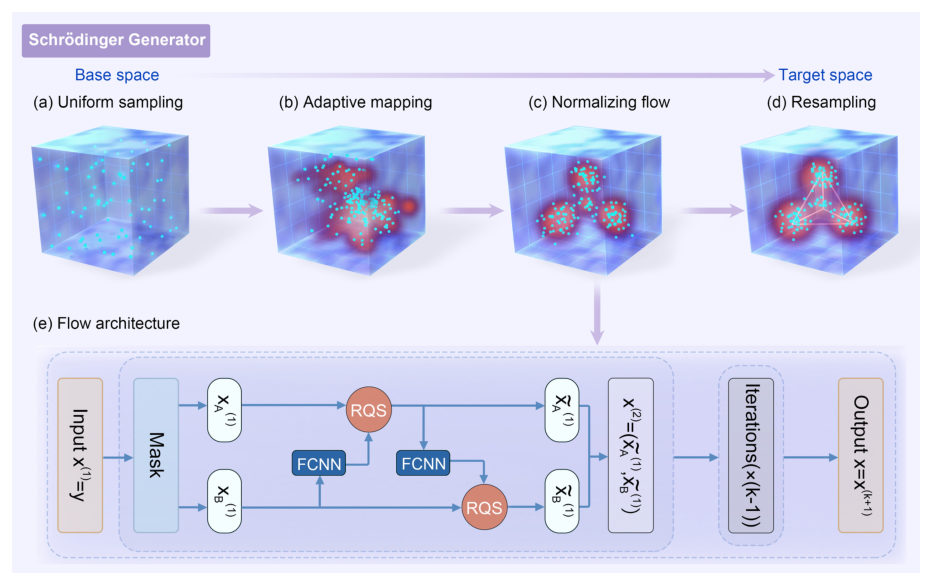
<figcaption class="paper-figure-caption"><b>Fig 1.</b> Fig. 1 Schematic of the Schr¨odinger Generator for high-dimensional integration and sampling. The frame- work combines an adaptive coordinate transformation, which reduces variance in each dimension, with a normalizing-flow transformation, which learns high-dimensional correlations, enabling efficient integration and low-variance sampling from complex target distributions. Upper panels show evolution of density distribution at successive stages: uniform initial sam- pling (a), adaptive importance mapping (b), flow-based transformation (c), and final resampling (d). Lower panels show architecture of the normalizing flow transformation using rational quadratic spline (RQS) with fully...</figcaption>
</figure>
<figure class="paper-figure-card">
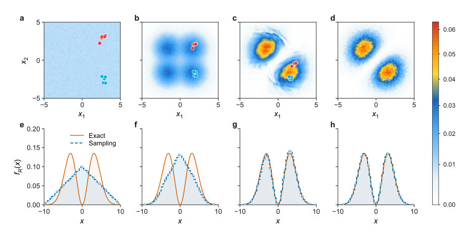
<figcaption class="paper-figure-caption"><b>Fig 2.</b> Fig. 2 Evolution of the sampled density for the two-dimensional fermionic distribution. Density distribu- tions at successive stages of the Schr¨odinger generator: uniform initial sampling (a), adaptive importance mapping (b), normalizing-flow transformation (c), and final resampling (d). The red and blue solid circles in (a)-(c) denote representative samples. Distribution of relative distance x = x1 −x2 obtained analytically (red solid lines) and from numerical samples (blue dashed lines) are presented in the corresponding lower panels. The SG progressively captures the bimodal structure and the suppressed diagonal region of the target distribution.</figcaption>
</figure>
<figure class="paper-figure-card">
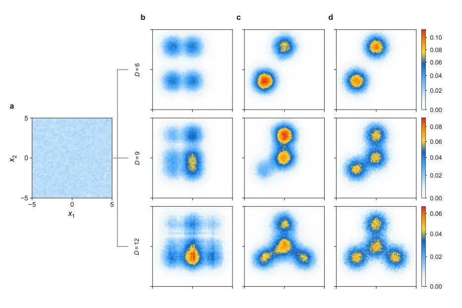
<figcaption class="paper-figure-caption"><b>Fig 3.</b> Fig. 3 Learning fermionic densities with the Schr¨odinger Generator. Evolution of the sampled density at succes- sive stages of the SG pipeline: uniform initialization (a), adaptive importance mapping (b), normalizing-flow transformation (c), and final resampling (d). Results are shown for dimensions D = 6 (top), D = 9 (middle) and D = 12 (bottom).</figcaption>
</figure>
<figure class="paper-figure-card">
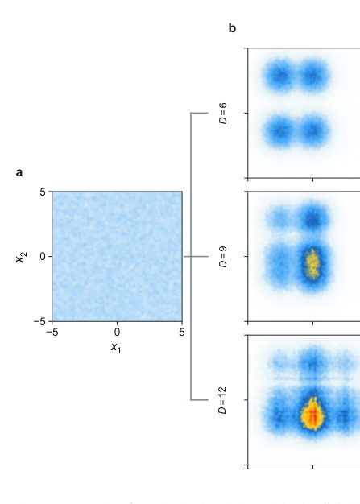
<figcaption class="paper-figure-caption"><b>Fig 4.</b> Figure 4 depicts a quantitative performance comparison. The upper panel shows the KL diver- gence between the sampled and target distribu- tions for uniform sampling, VEGAS sampling, and SG sampling. While uniform and VEGAS sampling rapidly degrade with increasing dimen- sion, SG maintains the lowest KL divergence from D = 2 up to D = 12, indicating a faithful recon- struction of the full probability density. The lower panel reports the corresponding uncertainties in the numerical evaluation of the normalization inte- gral. Consistent with the KL results, SG achieves significant reduction in the integral error relative to conventional methods in high dimensions.</figcaption>
</figure>
<figure class="paper-figure-card">
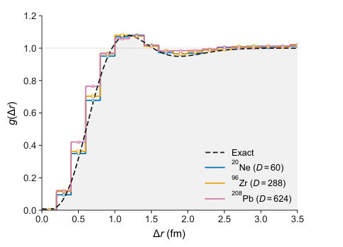
<figcaption class="paper-figure-caption"><b>Fig 5.</b> Fig. 5 Two-nucleon correlation functions in nuclei with the Schr¨odinger Generator. Radial two-body correlation functions g(∆r) for nucleus 20Ne, 96Zr, and 208Pb as a function of relative distance ∆r. Dashed lines denote the analytical input correlations, while solid lines represent results extracted from the generated samples in D = 60, 288, and 624 dimensions.</figcaption>
</figure>
</div>

<p><strong>Summary.</strong> This paper introduces the Schrödinger Generator (SG), a novel hybrid framework designed to overcome the limitations of Monte Carlo methods in high-dimensional integration. By combining adaptive importance sampling with normalizing flows, SG accurately samples highly correlated quantum many-body states, demonstrating stability up to dimensions exceeding 600 for nuclear physics applications.</p>
<p><strong>Why it may be interesting.</strong> The development of robust, high-dimensional sampling tools is crucial for simulating complex quantum systems where correlations dominate the physics, providing a powerful computational tool applicable beyond standard condensed matter models.</p>
<details>
<summary>Detailed structure</summary>
<p><strong>Main problem.</strong> High-dimensional integration and sampling of complex probability distributions, particularly those arising from quantum many-body systems, are computationally challenging for conventional Monte Carlo methods.</p>
<p><strong>Main result.</strong> The proposed Schrödinger Generator (SG) framework achieves stable and scalable performance in dimensions exceeding 600, accurately reproducing strong correlations and nodal structures previously difficult to sample.</p>
<p><strong>Method.</strong> It introduces a hybrid sampling technique that decomposes the Jacobian into an adaptive map component (for variance reduction) and a normalizing flow component (for capturing non-factorizable correlations), followed by a resampling step for unbiasedness.</p>
<p><strong>Model / system.</strong> The method is benchmarked on quantum many-body states, specifically using the N-body density derived from fermionic wave functions, applied to nuclear systems up to $D=624$ dimensions.</p>
<p><strong>Key observables.</strong> Integration estimates, Kullback–Leibler (KL) divergence, and two-nucleon correlation functions ($g(\Delta r)$).</p>
<p><strong>Important parameters / regimes.</strong> High dimensionality ($D>600$), fermionic antisymmetry constraints, and the structure of the target density $|\Psi(\mathbf{x})|^2$.</p>
<p><strong>Assumptions / limitations.</strong> The framework assumes that decomposing the Jacobian into adaptive mapping and flow transformation stabilizes optimization; a final resampling step is necessary to guarantee unbiased sampling.</p>
<p><strong>Figures summary.</strong> Figures illustrate the SG workflow stages (uniform $   o$ adaptive $   o$ flow $   o$ resample) and show the successful reconstruction of correlated densities in $D=2$, $D=6, 9, 12$, and quantitative comparisons of KL divergence vs. dimension.</p>
<p><strong>Paper structure.</strong> The paper introduces the SG framework by identifying the limitations of standard MC methods; it details the mathematical decomposition of the Jacobian into adaptive mapping and normalizing flow components; results are demonstrated across increasing dimensions ($D=2$ up to $D=624$), showing improved accuracy over existing techniques.</p>
</details>
<details>
<summary>Abstract</summary>
<p>Integration and sampling in high dimensions are among central challenges in modern science and technology, underlying applications ranging from quantum many-body physics to Bayesian inference and artificial intelligence. Although conventional Monte Carlo methods are formally scalable, their efficiency deteriorates rapidly in the presence of strong correlations or sharp features in high-dimensional configuration space. Here we introduce a new framework, termed the Schr"odinger Generator, for integration and sampling based on the explicit optimization of coordinate transformations. The method decomposes the total Jacobian into two complementary components, including an adaptive map that minimizes estimator variance by learning the marginal structure in each dimension, and a normalizing-flow-based transformation that captures non-factorizable correlations in the target distribution. A final resampling step guarantees unbiased sampling even when the learned transformation is imperfect. We demonstrate stable and scalable performance for nuclear quantum many-body states in dimensions exceeding 600. Short-range correlations among nucleons in finite nucleus are faithfully reproduced. The framework offers a physically transparent approach to high-dimensional stochastic integration and sampling, opening new possibilities for simulations of complex quantum systems.</p>
</details>
<p><sub><a href="#top">↑ back to top</a></sub></p>

<p><a id="paper-2608.01483"></a></p>
<h3 id="spatial-order-hierarchy-of-time-dependent-exchange-correlation-potential"><a href="http://arxiv.org/abs/2608.01483v1">Spatial-Order Hierarchy of Time-Dependent Exchange-Correlation Potential</a></h3>
<p><strong>Authors:</strong> Naoki Negishi<br>
<strong>Type:</strong> theory · <strong>Category:</strong> strongly correlated electrons · <strong>PDF:</strong> <a href="https://arxiv.org/pdf/2608.01483v1">https://arxiv.org/pdf/2608.01483v1</a><br>
<strong>Analysis basis:</strong> full PDF text, analyzed in chunks
<strong>Topic relevance:</strong> <code>Keldysh / 2PI / non-Gaussian methods</code> <strong>3/5</strong> · <code>methods for driven-dissipative</code> <strong>1/5</strong> · <code>non-equilibrium dynamics</code> <strong>1/5</strong></p>
<div class="figure-strip-hint">↔ Scroll figures horizontally</div>
<div class="paper-figures-scroll">
<figure class="paper-figure-card">
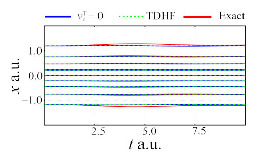
<figcaption class="paper-figure-caption"><b>Fig 1.</b> FIG. 1. Contours of the cumulative density Θ(x, t) obtained from the exact TDSE (red solid), the truncated propagation with exact vW xc and vT c = 0 (blue dashed), and TDHF (green dotted). The contour interval is 0.2.</figcaption>
</figure>
<figure class="paper-figure-card">
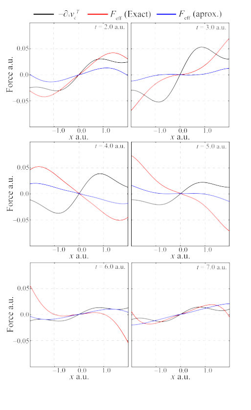
<figcaption class="paper-figure-caption"><b>Fig 2.</b> FIG. 2. Snapshots of kinetic-correlation force −∂xvT c (black solid), the exact effective force F exact eff (red dashed), and the effective force obtained with vT c = 0 (blue dotted).</figcaption>
</figure>
</div>

<p><strong>Summary.</strong> This paper tackles the unknown structural link between interaction and kinetic components within TDDFT's exchange-correlation potential. Using 1RDM expansions and numerical simulations on a 1D model, it derives mathematical constraints proving that accurate description of non-adiabatic electron motion requires incorporating these kinetic correlation terms. This provides an exact guiding principle for developing next-generation quantum simulation functionals.</p>
<p><strong>Why it may be interesting.</strong> This work provides fundamental theoretical constraints for constructing accurate time-dependent functionals beyond standard approximations, which is crucial for simulating complex quantum dynamics in condensed matter systems.</p>
<details>
<summary>Detailed structure</summary>
<p><strong>Main problem.</strong> The core problem is establishing a rigorous structural relationship between the kinetic-correlation ($v_{T}^{c}$) and interaction components of the time-dependent exchange-correlation potential ($v_{xc}$) within TDDFT.</p>
<p><strong>Main result.</strong> The analysis establishes mathematical constraints derived from the off-diagonal expansion of the one-body reduced density matrix, proving that non-trivial kinetic correlation terms are necessary for accurate description during non-adiabatic dynamics.</p>
<p><strong>Method.</strong> The authors employ a combination of theoretical derivation using 1RDM expansions and numerical simulation on a 1D two-electron model to test different approximations for $v_{xc}$.</p>
<p><strong>Model / system.</strong> The study uses general N-electron systems, with specific quantitative tests performed on a one-dimensional two-electron spin-singlet model analogous to a 1D helium system.</p>
<p><strong>Key observables.</strong> Electron density evolution ($\Theta(x, t)$), the effective force field ($F_{	ext{eff}}$), and the difference between exact and Hartree-Fock reduced density matrices ($\Delta\hat{\gamma}(t)$).</p>
<p><strong>Important parameters / regimes.</strong> Time scales (e.g., $t=5.0$ a.u.), spatial dimensions (1D), and the order of expansion in the 1RDM off-diagonal distance.</p>
<p><strong>Assumptions / limitations.</strong> The analysis relies on expanding the 1RDM relative to the TDHF reference, and while it addresses non-adiabatic dynamics, some derivations utilize structural constraints derived from low-order Taylor expansions.</p>
<p><strong>Figures summary.</strong> Figures compare contours of the cumulative density function $\Theta(x, t)$ showing differences between exact time evolution (red solid) and truncated propagation results.</p>
<p><strong>Paper structure.</strong> The paper progresses by first defining the components of $v_{xc}$ via 1RDM structure; it then establishes a mathematical constraint linking these components using low-order expansions; finally, numerical simulations on a 1D model demonstrate the physical consequences of neglecting kinetic correlation terms.</p>
</details>
<details>
<summary>Abstract</summary>
<p>Exact time-dependent density-functional theory separates the exchange-correlation potential into interaction and kinetic-correlation components, but the structural relation between them remains unknown. We establish a representability constraint based on the off-diagonal expansion of the one-electron reduced density matrix relative to a time-dependent Hartree-Fock (TDHF) reference. A non-zero linear term generates a non-HF current density while the kinetic-correlation component remains HF representable; higher-order off-diagonal structure activates the kinetic component. In a one-dimensional two-electron correlation quench, retaining the exact interaction component while setting the kinetic component to zero suppresses the density broadening of the exact evolution. These results establish a hierarchy of density equations of motion and provide an exact constraint for non-adiabatic functional construction.</p>
</details>
<p><sub><a href="#top">↑ back to top</a></sub></p>

<p><a id="paper-2608.01062"></a></p>
<h3 id="magnetic-circular-dichroism-of-thz-modes-and-selection-rules-of-raman-active-optical-phonons-in-the-polar-altermagnet-candidate-cemn2mo3o8"><a href="http://arxiv.org/abs/2608.01062v1">Magnetic circular dichroism of THz modes and selection rules of Raman-active optical phonons in the polar altermagnet candidate \ce{Mn2Mo3O8}</a></h3>
<p><strong>Authors:</strong> F. Schilberth, K. Vasin, M. Knauft, M. Kondákor, M. Vuckovic, N. Herrmann, K. Penc, M. Minola, B. Keimer, V. A. Martinez, K. Panda, A. A. Sirenko, L. Prodan, V. Tsurkan, A. A. Tsirlin, I. Kézsmárki, J. Deisenhofer<br>
<strong>Type:</strong> both · <strong>Category:</strong> strongly correlated electrons · <strong>PDF:</strong> <a href="https://arxiv.org/pdf/2608.01062v1">https://arxiv.org/pdf/2608.01062v1</a><br>
<strong>Analysis basis:</strong> full PDF text, analyzed in chunks
<strong>Topic relevance:</strong> <code>spintronics-quantum-optics interface</code> <strong>3/5</strong> · <code>exotic spin models in light-matter</code> <strong>1/5</strong></p>
<div class="figure-strip-hint">↔ Scroll figures horizontally</div>
<div class="paper-figures-scroll">
<figure class="paper-figure-card">
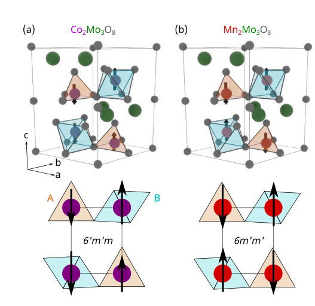
<figcaption class="paper-figure-caption"><b>Fig 1.</b> FIG. 1. Comparison of the different magnetic structures of (a) Co2Mo3O8/Fe2Mo3O8 and (b) Mn2Mo3O8. While for Co2Mo3O8/Fe2Mo3O8 the compensated antiferromagnetic state comprises four magnetic sublattices within the magnetic point group 6′m′m, Mn2Mo3O8 is described by two magnetic sublattices within the magnetic point group 6m′m′, which allows for ferrimagnetism.</figcaption>
</figure>
<figure class="paper-figure-card">
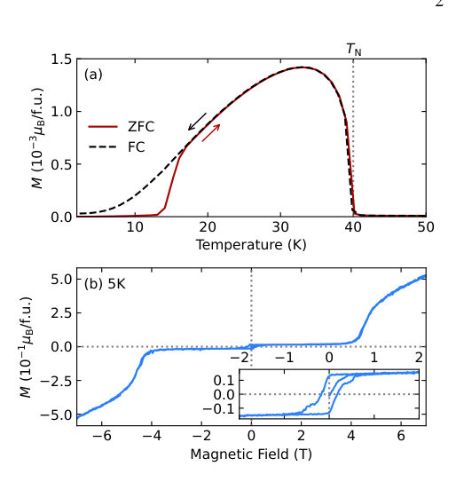
<figcaption class="paper-figure-caption"><b>Fig 2.</b> FIG. 2. (a) Magnetization of Mn2Mo3O8 as a function of tempera- ture measured upon heating after zero-field cooling (ZFC) and upon cooling in field (FC), both in a field of H = 100 Oe along the c-axis. (b) Magnetization as a function of magnetic field along the c-axis. The inset zooms in on the hysteresis at low fields.</figcaption>
</figure>
<figure class="paper-figure-card">
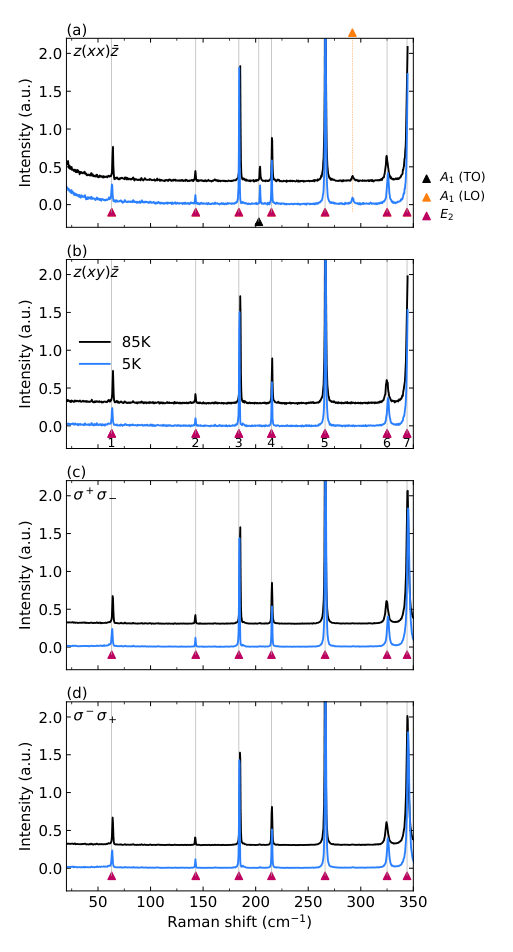
<figcaption class="paper-figure-caption"><b>Fig 3.</b> FIG. 3. Comparison of Raman spectra at 85 K (black) and 5 K (blue) in scattering configurations (a) z(xx)¯z allowing for the observation of E2 and A1 modes, (b) z(xy)¯z corresponding to the irreducible E2 representations of the paramagnetic phase. The determined eigen- frequencies of phonon modes expected for each configuration in the paramagnetic phase are indicated by upward triangles at the bottom of the individual panels. Symbols at the top of the panels indicate modes different from expected modes of the paramagnetic phase as described in the text. (c) and (d): Comparison of Raman spectra in crossed circular polarization configurations z(σ+σ−)¯z and z(σ−σ+)¯z at 5 K and 85 K.</figcaption>
</figure>
<figure class="paper-figure-card">
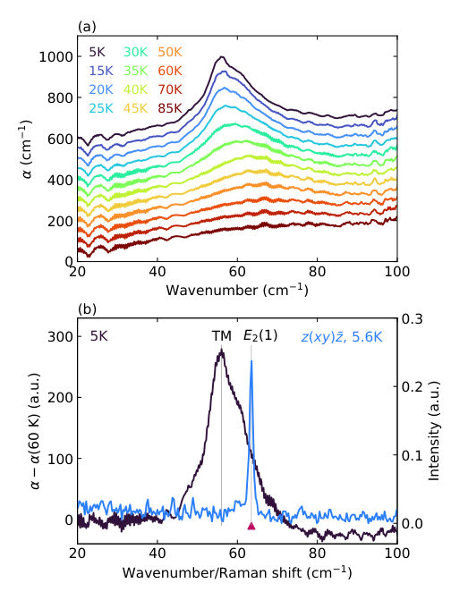
<figcaption class="paper-figure-caption"><b>Fig 4.</b> FIG. 4. (a) Temperature dependence of the absorption coefficient α in Mn2Mo3O8 for light polarization configuration Eω,Hω ⊥c cross- ing into the magnetically ordered state at TN = 41 K. (b) Comparison of the absorption difference ∆α = α(5 K)−α(60 K) (black) and the lowest-lying E2(1) Raman mode (blue) in the magnetically ordered state at T = 5 K.</figcaption>
</figure>
<figure class="paper-figure-card">
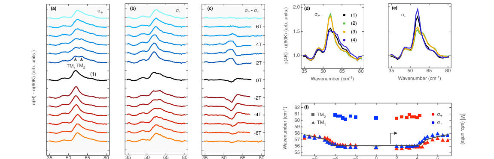
<figcaption class="paper-figure-caption"><b>Fig 5.</b> FIG. 5. Magnetic field dependence of absorption difference spectra for (a) right circularly polarized light (σ+), (b) left circularly polarized light (σ−) and (c) the difference of right and left circularly polarized spectra σ+ −σ−. Panels (d) and (e) show the zero-field absorption spectra for σ+ and σ−, where (1) corresponds to the first zero-field cooled spectra, (2) to the spectrum taken after the sweep to +7 T, (3) to the one taken after heating to 60 K and zero-field cooling again down to 5 K, and (4) to the one taken after the sweep to -7 T. (f) Magnetic field dependence of the peak frequencies of TM1 and TM2 in comparison to the modulus of the magnetization shown in Fig. 2(b).</figcaption>
</figure>
</div>

<p><strong>Summary.</strong> This study characterizes the coupled magnetic and vibrational excitations in Mn2Mo3O8 using THz spectroscopy and Raman scattering. By analyzing selection rules against crystal and magnetic symmetries, the authors identified key optical phonons and observed a characteristic magnetic circular dichroism signal linked to two-magnon excitations that vanishes upon field changes.</p>
<p><strong>Why it may be interesting.</strong> This work directly bridges lattice dynamics (phonons) and magnetism (magnons/MCD) in a strongly correlated oxide system, providing detailed spectroscopic evidence of symmetry breaking upon magnetic ordering, which is crucial for understanding emergent quantum phenomena in solids.</p>
<details>
<summary>Detailed structure</summary>
<p><strong>Main problem.</strong> The study investigates the magnetic and vibrational excitations, specifically THz modes and Raman-active optical phonons, in the polar altermagnet candidate Mn2Mo3O8.</p>
<p><strong>Main result.</strong> Strong magnetic circular dichroism was observed at a broad THz excitation band only in the magnetically ordered state, which vanishes above the spin-flop transition. Furthermore, all optical phonons were identified using combined spectroscopic and theoretical analysis.</p>
<p><strong>Method.</strong> The research combines temperature-dependent Raman scattering and magneto-optical THz time-domain spectroscopy with <em>ab initio</em> DFT+U calculations to analyze symmetry constraints.</p>
<p><strong>Model / system.</strong> The physical system is the collinear altermagnet candidate Mn2Mo3O8, whose magnetic and vibrational properties are analyzed across paramagnetic and magnetically ordered phases using group theory applied to corepresentations.</p>
<p><strong>Key observables.</strong> Magnetic circular dichroism (MCD) in the THz range, Raman-active optical phonon frequencies ($ ext{A}_1$, $    ext{E}_2$ modes), and selection rules based on pseudo-angular momentum conservation.</p>
<p><strong>Important parameters / regimes.</strong> The spin-flop transition field (4 T); temperature dependence across magnetic ordering transitions ($T_N = 40 	ext{ K}$); DFT parameters ($  ext{U}_d = 5    ext{ eV}$, $    ext{J}_d = 1    ext{ eV}$).</p>
<p><strong>Assumptions / limitations.</strong> The analysis relies on comparing experimental results to predictions derived from magnetic point group symmetry and the conservation of pseudo-angular momentum.</p>
<p><strong>Figures summary.</strong> Figure 2 shows magnetization vs. T/H, indicating a spin-flop transition around 4 T; Figure 6 displays temperature-dependent absorption spectra related to optical band gaps.</p>
<p><strong>Paper structure.</strong> The paper systematically analyzes the material's symmetry using corepresentations, first identifying all optical phonons via Raman scattering and comparing selection rules with pseudo-angular momentum conservation. It then uses THz spectroscopy to probe magnetic excitations, observing MCD linked to the magnetic ordering state.</p>
</details>
<details>
<summary>Abstract</summary>
<p>We investigated the magnetic and vibrational excitations in the collinear altermagnet candidate \ce{Mn2Mo3O8} by temperature dependent Raman scattering and magneto-optical THz time-domain transmission spectroscopy. By comparison to \textit{ab initio} calculations accurately capturing the eigenfrequencies of the vibrational eigenmodes, we identify all optical phonons, including the lowest-lying Raman modes of $A_1$ and $E_2$ type, which had remained elusive in a previous Raman study. Moreover, we compare the selection rules for optically active phonons in the paramagnetic and the magnetically ordered phases of \ce{Mn2Mo3O8} and analyze the Raman selection rules with respect to pseudo-angular momentum conservation. No evidence of the expected splitting of the degenerate paramagnetic $E_2$ optical phonons into modes with circular polarization upon magnetic ordering could be resolved, likely due to weak spin-orbit coupling typical for Mn$^{2+}$. In contrast, we observe strong magnetic circular dichroism at a broad THz excitation band, emerging in the magnetically ordered state. This band, potentially originating from two-magnon excitations, is only electric-dipole active and features a field-dependent two-component fine structure. Its magnetic circular dichroism vanishes above the spin-flop transition at 4~T.</p>
</details>
<p><sub><a href="#top">↑ back to top</a></sub></p>

<p><a id="paper-2608.02600"></a></p>
<h3 id="nearly-tight-lower-bounds-for-estimating-quantum-functionals-uhlmann-fidelity-trace-distance-and-von-neumann-entropy"><a href="http://arxiv.org/abs/2608.02600v1">Nearly tight lower bounds for estimating quantum functionals: Uhlmann fidelity, trace distance, and von Neumann entropy</a></h3>
<p><strong>Authors:</strong> Qisheng Wang<br>
<strong>Type:</strong> theory · <strong>Category:</strong> quantum information and computing · <strong>PDF:</strong> <a href="https://arxiv.org/pdf/2608.02600v1">https://arxiv.org/pdf/2608.02600v1</a><br>
<strong>Analysis basis:</strong> full PDF text, analyzed in chunks
<strong>Topic relevance:</strong> <code>entanglement &amp; information structure</code> <strong>3/5</strong> · <code>quantum measurements</code> <strong>1/5</strong></p>
<div class="figure-strip-hint">↔ Scroll figures horizontally</div>
<div class="paper-figures-scroll">
<figure class="paper-figure-card">
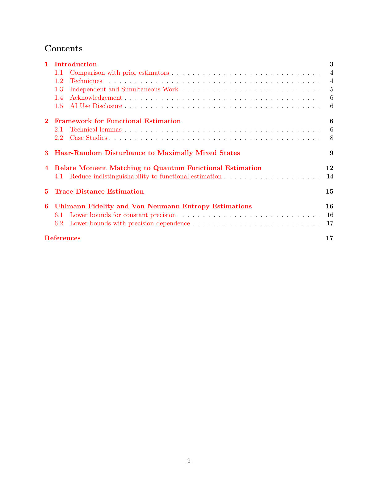
<figcaption class="paper-figure-caption"><b>Fig 1.</b> Low-resolution page preview, page 2</figcaption>
</figure>
<figure class="paper-figure-card">
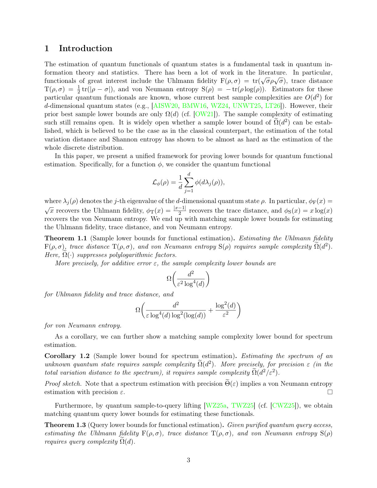
<figcaption class="paper-figure-caption"><b>Fig 2.</b> Low-resolution page preview, page 3</figcaption>
</figure>
<figure class="paper-figure-card">
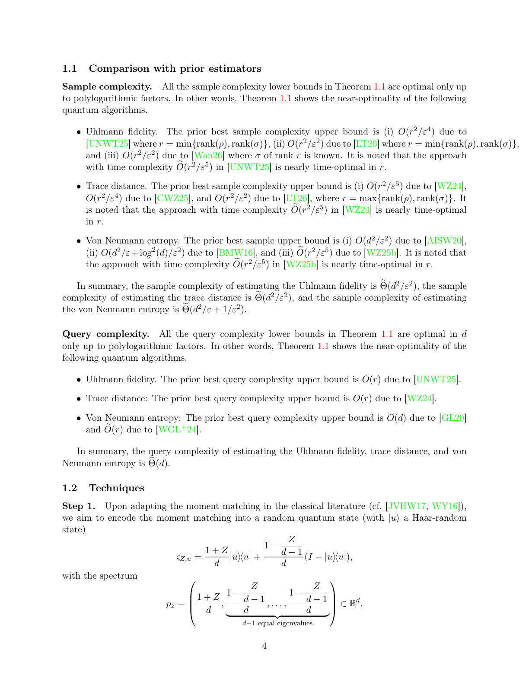
<figcaption class="paper-figure-caption"><b>Fig 3.</b> Low-resolution page preview, page 4</figcaption>
</figure>
<figure class="paper-figure-card">
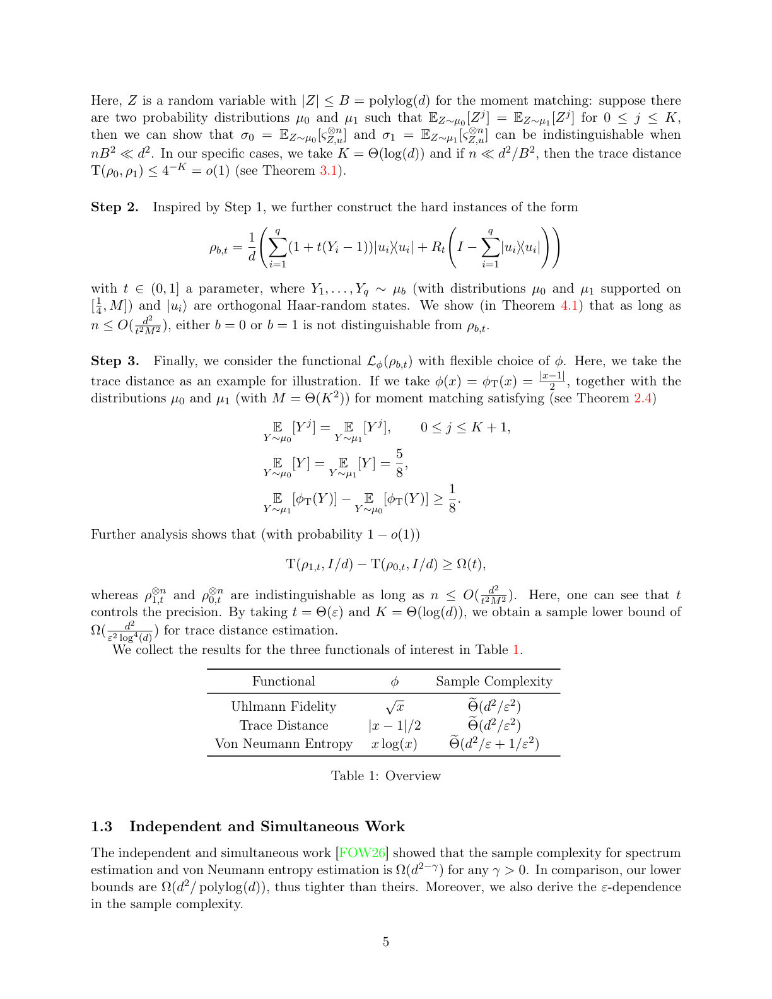
<figcaption class="paper-figure-caption"><b>Fig 4.</b> Low-resolution page preview, page 5</figcaption>
</figure>
<figure class="paper-figure-card">

<figcaption class="paper-figure-caption"><b>Fig 5.</b> Low-resolution page preview, page 6</figcaption>
</figure>
</div>

<p><strong>Summary.</strong> This work provides a unified theoretical framework to determine the fundamental sample and query complexity required to estimate key quantum functionals—Uhlmann fidelity, trace distance, and von Neumann entropy. By establishing lower bounds matching known upper bounds, it proves near-optimality for several quantum estimation algorithms. This has significant implications for designing resource-efficient quantum characterization protocols.</p>
<p><strong>Why it may be interesting.</strong> These fundamental lower bounds are crucial for understanding the limits of quantum estimation protocols. For AMO/open systems, knowing the minimum resources (samples/queries) needed to characterize state properties like entanglement or purity is vital for designing efficient measurements and characterization schemes.</p>
<details>
<summary>Detailed structure</summary>
<p><strong>Main problem.</strong> The paper establishes unified lower bounds for estimating fundamental quantum functionals of quantum states, such as Uhlmann fidelity, trace distance, and von Neumann entropy.</p>
<p><strong>Main result.</strong> It proves that estimating these three key functionals requires sample complexities scaling as $\widetilde{\Omega}(N^2)$ and yields corresponding query complexity lower bounds of $\widetilde{\Omega}(N)$.</p>
<p><strong>Method.</strong> The authors develop a unified framework using moment matching techniques, constructing hard instances based on Haar-random states to derive the necessary lower bounds.</p>
<p><strong>Model / system.</strong> The analysis concerns $d$-dimensional quantum states ($
ho$) and their estimation relative to other states or the maximally mixed state. The methodology involves relating functional estimation to distinguishing between two probability distributions via moments.</p>
<p><strong>Key observables.</strong> Uhlmann fidelity ($F$), trace distance ($T$), and von Neumann entropy ($S$).</p>
<p><strong>Important parameters / regimes.</strong> Dimensionality $d$, sample size $N$ (or $\epsilon$ for error), and the functional parameterization $\phi$.</p>
<p><strong>Assumptions / limitations.</strong> The results rely on constructing hard instances ($
ho_{b,t}$) and applying techniques from property testing, such as sample-to-query lifting.</p>
<p><strong>Paper structure.</strong> The paper introduces the general problem of bounding functional estimation. It then develops a unified framework using moment matching on constructed hard instances ($
ho_{b,t}$) to derive lower bounds for $F$, $T$, and $S$ in terms of sample complexity, concluding with query complexity results.</p>
</details>
<details>
<summary>Abstract</summary>
<p>In this paper, we present a unified framework for proving lower bounds for estimating functionals of quantum states. We therefore resolve several open problems by establishing lower bounds that match known upper bounds: we show that it requires $\widetildeΩ(N^2)$ samples to estimate the Uhlmann fidelity, trace distance, and von Neumann entropy. Moreover, they immediately imply matching query lower bounds of $\widetildeΩ(N)$ by quantum sample-to-query lifting. These lower bounds imply the near-optimality of a dozen quantum algorithms since 2016.</p>
</details>
<p><sub><a href="#top">↑ back to top</a></sub></p>

<p><a id="paper-2608.01438"></a></p>
<h3 id="automated-construction-and-verification-of-unextendible-product-bases"><a href="http://arxiv.org/abs/2608.01438v1">Automated Construction and Verification of Unextendible Product Bases</a></h3>
<p><strong>Authors:</strong> Zicheng Han, Wanchen Zhang, Fei Shi, Xiande Zhang<br>
<strong>Type:</strong> theory · <strong>Category:</strong> quantum information and computing · <strong>PDF:</strong> <a href="https://arxiv.org/pdf/2608.01438v1">https://arxiv.org/pdf/2608.01438v1</a><br>
<strong>Analysis basis:</strong> full PDF text, analyzed in chunks
<strong>Topic relevance:</strong> <code>entanglement &amp; information structure</code> <strong>3/5</strong></p>
<div class="figure-strip-hint">↔ Scroll figures horizontally</div>
<div class="paper-figures-scroll">
<figure class="paper-figure-card">
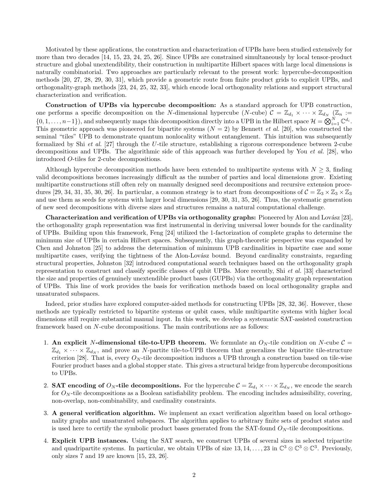
<figcaption class="paper-figure-caption"><b>Fig 1.</b> Low-resolution page preview, page 2</figcaption>
</figure>
<figure class="paper-figure-card">
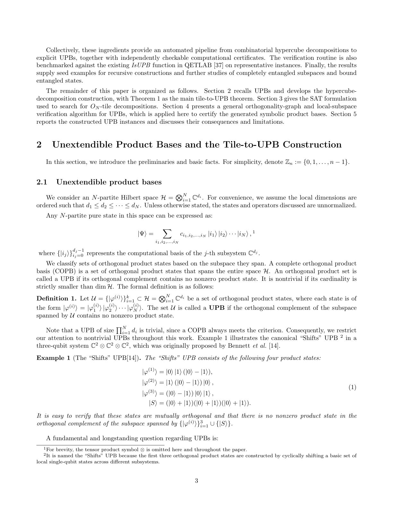
<figcaption class="paper-figure-caption"><b>Fig 2.</b> Low-resolution page preview, page 3</figcaption>
</figure>
<figure class="paper-figure-card">

<figcaption class="paper-figure-caption"><b>Fig 3.</b> Low-resolution page preview, page 4</figcaption>
</figure>
<figure class="paper-figure-card">
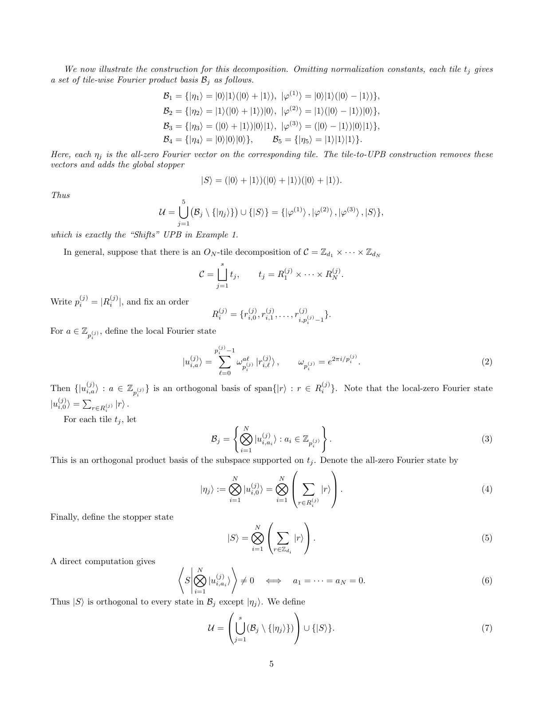
<figcaption class="paper-figure-caption"><b>Fig 4.</b> Low-resolution page preview, page 5</figcaption>
</figure>
<figure class="paper-figure-card">

<figcaption class="paper-figure-caption"><b>Fig 5.</b> Low-resolution page preview, page 6</figcaption>
</figure>
</div>

<p><strong>Summary.</strong> This paper introduces a novel SAT-assisted framework to systematically construct and verify Unextendible Product Bases (UPBs) in multipartite quantum systems. By relating UPB existence to ON-tile decompositions of the hypercube, the authors provide an automated pipeline for generating explicit examples of these important structures. This advances the understanding of entanglement by providing concrete, verifiable examples of highly entangled subspaces.</p>
<p><strong>Why it may be interesting.</strong> This work provides rigorous, systematic methods to construct highly structured quantum states (UPBs) that are crucial for understanding entanglement measures like bound entanglement in multipartite systems.</p>
<details>
<summary>Detailed structure</summary>
<p><strong>Main problem.</strong> The central problem is determining the existence and constructing Unextendible Product Bases (UPBs) of specific sizes within multipartite quantum systems.</p>
<p><strong>Main result.</strong> The authors established a tile-to-UPB theorem, providing an automated framework to generate explicit UPBs by solving combinatorial problems using SAT solvers.</p>
<p><strong>Method.</strong> They combine concepts from combinatorics (ON-tile decompositions of the hypercube) with computational tools (SAT solvers) and quantum information theory constructions (Fourier product bases).</p>
<p><strong>Model / system.</strong> The study concerns N-partite Hilbert spaces, $\mathcal{H} = \bigotimes_{i=1}^N \mathbb{C}^{d_i}$, where UPBs are sets of mutually orthogonal product states whose complement contains no non-zero product state.</p>
<p><strong>Key observables.</strong> Cardinality (size) of the UPB; existence of ON-tile decompositions.</p>
<p><strong>Important parameters / regimes.</strong> The dimensions $d_1, \dots, d_N$ of the local subsystems; the number of tiles $s$ in the decomposition.</p>
<p><strong>Assumptions / limitations.</strong> The construction relies on finding an ON-tile decomposition of the underlying hypercube structure.</p>
<p><strong>Figures summary.</strong> Tables summarize known UPB sizes for small tripartite and quadripartite systems, showing new instances found through their systematic search.</p>
<p><strong>Paper structure.</strong> The paper introduces the problem, develops the SAT-assisted framework based on ON-tile decompositions, proves the tile-to-UPB theorem, implements a verification algorithm, and presents specific calculated examples of UPBs.</p>
</details>
<details>
<summary>Abstract</summary>
<p>Unextendible product bases (UPBs) are important structures in quantum information theory, with applications to completely entangled subspaces, bound entanglement, and local indistinguishability. Since many properties and applications of UPBs are closely related to their cardinalities, one of the central problems in the study of UPBs is to determine whether UPBs of prescribed sizes exist in a given multipartite system. In this paper, we introduce a SAT-assisted framework based on decompositions of the \(N\)-dimensional hypercube. We define \(O_N\)-tile decompositions and prove a tile-to-UPB theorem: every \(O_N\)-tile decomposition induces a UPB through a construction based on tile-wise Fourier product bases and a global stopper state. We then encode the search for such decompositions as a Boolean satisfiability (SAT) problem and use SAT solvers to generate explicit instances. In terms of verification, we also implement a UPB verification algorithm based on local orthogonality graphs and unsaturated subspaces. The algorithm can be used to determine whether an arbitrary finite set of product states forms a UPB. Using this framework, we obtain UPBs of several sizes in some tripartite and quadripartite systems, including sizes \(13,14,\ldots,23\) in \(\mathbb C^3\otimes\mathbb C^3\otimes\mathbb C^3\). Moreover, the small-dimensional instances obtained here can serve as seed UPBs for recursive constructions, leading to further examples in larger multipartite systems.</p>
</details>
<p><sub><a href="#top">↑ back to top</a></sub></p>

<p><a id="paper-2608.02590"></a></p>
<h3 id="optimal-quantum-de-finetti-theorems-via-argmax-rounding"><a href="http://arxiv.org/abs/2608.02590v1">Optimal Quantum de Finetti Theorems via Argmax Rounding</a></h3>
<p><strong>Authors:</strong> Fernando Granha Jeronimo, Pei Wu, Haochen Xu<br>
<strong>Type:</strong> theory · <strong>Category:</strong> quantum information and computing · <strong>PDF:</strong> <a href="https://arxiv.org/pdf/2608.02590v1">https://arxiv.org/pdf/2608.02590v1</a><br>
<strong>Analysis basis:</strong> full PDF text, analyzed in chunks
<strong>Topic relevance:</strong> <code>entanglement &amp; information structure</code> <strong>3/5</strong></p>
<div class="figure-strip-hint">↔ Scroll figures horizontally</div>
<div class="paper-figures-scroll">
<figure class="paper-figure-card">

<figcaption class="paper-figure-caption"><b>Fig 1.</b> Figure 1: Dependency structure of the main results. Solid arrows show the proof organization used in the main body. Blue nodes are de Finetti statements; tan nodes are applications. The dashed gray branch records further consequences available through the reductions of Harrow–Montanaro [HM13, Sec. 4.2]; their parameters depend on the losses in those reductions.</figcaption>
</figure>
<figure class="paper-figure-card">

<figcaption class="paper-figure-caption"><b>Fig 2.</b> Figure 2: State-set containments underlying the de Finetti theorems. Nesting records containment. From left to right, the dotted markers represent the worst- case de Finetti errors for (EXCH(t) N , SEP(t) P ), (BOS(t) N , SEP(t) H ), (BEXTn,m, SEP), and (EXTn,m, SEP). Marker lengths are schematic.</figcaption>
</figure>
</div>

<p><strong>Summary.</strong> This work establishes optimal upper bounds for quantum de Finetti theorems, quantifying how close a highly symmetric quantum state can be to a product state. By applying advanced semidefinite programming techniques and the argmax method, it achieves sharp rates like $O(N^{-1/2})$ in Hilbert-Schmidt distance. The results have major implications by refuting conjectures related to entanglement structure and improving complexity bounds for quantum information tasks.</p>
<p><strong>Why it may be interesting.</strong> It provides fundamental quantitative tools (optimal error bounds) that improve complexity results from exponential to subexponential dependence on local dimension $d$, impacting quantum complexity theory.</p>
<details>
<summary>Detailed structure</summary>
<p><strong>Main problem.</strong> The paper aims to establish optimal finite quantum de Finetti upper bounds for bosonic and general exchangeable quantum states.</p>
<p><strong>Main result.</strong> Optimal bounds are proven, notably achieving an $O(N^{-1/2})$ rate in Hilbert-Schmidt distance for the dimension-free bosonic case, which also refutes Watrous's disentangler conjecture.</p>
<p><strong>Method.</strong> The proof reformulates de Finetti approximation as a sum-of-squares rounding problem and applies the argmax method to solve an associated semidefinite program.</p>
<p><strong>Model / system.</strong> The analysis focuses on bosonic states $
ho_N$ in symmetric tensor product spaces, comparing them against separable or product-like state structures across $N$ subsystems with local dimension $d$.</p>
<p><strong>Key observables.</strong> Trace distance ($  ext{Dtr}$), Hilbert-Schmidt distance ($ ext{DHS}_H$), and the error bounds quantifying deviation from independence.</p>
<p><strong>Important parameters / regimes.</strong> Number of sites ($N$), local dimension ($d$), and marginal size ($t$).</p>
<p><strong>Assumptions / limitations.</strong> The analysis relies on casting approximation problems as semidefinite programming relaxations that are then rounded using the argmax principle.</p>
<p><strong>Figures summary.</strong> Not specified in the notes, but the structure implies derivations of bounds (e.g., Theorem 1.1-1.4) and explicit lower bound calculations for distances.</p>
<p><strong>Paper structure.</strong> The paper progresses from establishing general optimal finite quantum de Finetti bounds to specific applications: refuting Watrous's conjecture via disentanglers, developing algorithms for Best Separable State estimation, and finally deriving the dimension-free bosonic bound using Hilbert-Schmidt norms.</p>
</details>
<details>
<summary>Abstract</summary>
<p>We prove optimal finite quantum de Finetti upper bounds. Given a bosonic state $ρ_N\in D(\mathrm{Sym}^N(\mathbb C^d))$, there is a probability measure $ν$ on the unit sphere such that \[   \left\|   ρ_N^{(2)}-\int |u\rangle\langle u|^{\otimes 2}\,dν(u)   \right\|_1   \le \frac{\sqrt{d-1}}{N-1}. \] By purification, the bosonic theorem also gives the optimal $O(d/N)$ upper bound for arbitrary exchangeable states. These results settle the dimension dependence left open by Christandl, König, Mitchison, and Renner (CMP 2007). The proof casts de Finetti approximation as sum-of-squares rounding and applies the argmax method of Jeronimo, Wu, and Xu (manuscript 2026).   More generally, $t$-site marginals satisfy $O(t\sqrt d/N)$ bosonic and $O(td/N)$ permutation-invariant bounds. Our proof formulates de Finetti approximation as the integrality gap of a symmetric-extension semidefinite program and rounds an optimum by the argmax principle. The sharp bounds have several consequences. For every fixed $\varepsilon\in(0,1)$, we construct a channel with input dimension $D=\exp(O_\varepsilon(\sqrt d\log d))=\exp(o(d))$ whose outputs are $\varepsilon$-close to separable states of local dimension $d$ and whose image contains every such separable state, thereby refuting Watrous's disentangler conjecture. We also obtain deterministic $\exp(\widetilde O(\sqrt d/\varepsilon))$-time algorithms for explicit Best Separable State without perfect completeness and for trace-distance separability testing.   Finally, spectral truncation gives the first dimension-free bosonic de Finetti theorem in Hilbert--Schmidt distance, with the optimal rate $Θ(N^{-1/2})$ when the dimension may grow.</p>
</details>
<p><sub><a href="#top">↑ back to top</a></sub></p>

<p><a id="paper-2608.02041"></a></p>
<h3 id="towards-tensor-network-sat-solvers-for-quantum-classical-workflows"><a href="http://arxiv.org/abs/2608.02041v1">Towards Tensor-Network SAT-Solvers for Quantum-Classical Workflows</a></h3>
<p><strong>Authors:</strong> Benjamin Zec, Lukas Schmidbauer, Maja Franz, Wolfgang Mauerer<br>
<strong>Type:</strong> both · <strong>Category:</strong> numerical methods · <strong>PDF:</strong> <a href="https://arxiv.org/pdf/2608.02041v1">https://arxiv.org/pdf/2608.02041v1</a><br>
<strong>Analysis basis:</strong> full PDF text, analyzed in chunks
<strong>Topic relevance:</strong> <code>methods for driven-dissipative</code> <strong>3/5</strong></p>
<div class="figure-strip-hint">↔ Scroll figures horizontally</div>
<div class="paper-figures-scroll">
<figure class="paper-figure-card">

<figcaption class="paper-figure-caption"><b>Fig 1.</b> Fig. 1. We benchmark two transformation paths: MAX 3-SAT cast into PUBO, Ising and then MPO (path one) and MAX 3-SAT cast into PUBO, quadratised to QUBO, Ising and then MPO. We compare SA and DMRG ground-state deviations for the Ising and MPO models, respectively.</figcaption>
</figure>
<figure class="paper-figure-card">

<figcaption class="paper-figure-caption"><b>Fig 2.</b> Fig. 2. Optimisation performance of SA (green) and DMRG (yellow), grouped by number of SAT variables n and clause count m. Upper panels show runtime per instance: SA is consistently faster and DMRG scales with n in both encodings, where outliers reflect instances with increased bond dimension χ, driving up contraction cost. Lower panels show deviation from the ground state: the PUBO encoding keeps deviations near zero throughout, while QUBO deviations grow monotonically with n and m and outliers reflect individual instances trapped in local minima due to insufficient bond dimension χ.</figcaption>
</figure>
</div>

<p><strong>Summary.</strong> This paper investigates using tensor network methods, specifically DMRG, as a classical surrogate for solving optimization problems derived from SAT instances within hybrid quantum computing workflows. The authors demonstrate that the encoding used (e.g., PUBO vs. QUBO) critically impacts performance, and they find that classical solvers like Simulated Annealing can match or exceed the performance of DMRG for these specific, classically solvable ground-state problems.</p>
<p><strong>Why it may be interesting.</strong> While focused on optimization rather than fundamental quantum dynamics, the use of tensor networks (DMRG) as a benchmark surrogate for classical computation methods is highly relevant to understanding computational resource trade-offs in near-term quantum hardware architectures.</p>
<details>
<summary>Detailed structure</summary>
<p><strong>Main problem.</strong> The core problem is developing robust classical surrogate mechanisms for solving optimization problems derived from Boolean satisfiability (SAT) within hybrid High-Performance Computing/Quantum Computing workflows.</p>
<p><strong>Main result.</strong> The study finds that the choice of encoding (PUBO vs. QUBO) and the resulting solver performance are highly dependent on the problem structure, showing that simple transformations like quadratization can degrade solution quality significantly.</p>
<p><strong>Method.</strong> The authors compare tensor network solvers (DMRG) against classical optimization techniques (Simulated Annealing) applied to Hamiltonians derived from SAT instances encoded as Matrix Product Operators.</p>
<p><strong>Model / system.</strong> The model involves mapping Max-3-SAT problems into Pseudo-Boolean Functions, which are then formulated as Ising models and optimized using tensor network representations (MPOs).</p>
<p><strong>Key observables.</strong> Solution quality (deviation from ground state), runtime scaling with problem size ($n$ variables, $m$ clauses), and the comparative performance of different encoding schemes.</p>
<p><strong>Important parameters / regimes.</strong> The comparison involves native PUBO vs. quadratized QUBO encodings, and DMRG vs. SA solvers across varying system sizes.</p>
<p><strong>Assumptions / limitations.</strong> It is assumed that integrated HPC/QC systems require classical fallbacks due to limitations like observability, necessitating an understanding of surrogate performance.</p>
<p><strong>Figures summary.</strong> Figure 1 illustrates the end-to-end workflow comparing PUBO and QUBO paths. Figure 2 compares optimization performance (runtime and deviation) between SA and DMRG for both encodings as a function of $n$ and $m$.</p>
<p><strong>Paper structure.</strong> The paper establishes the need for classical surrogates in HPC/QC, details the mapping from SAT to MPOs via PUBO/QUBO, benchmarks two encoding paths (native vs. quadratized), and compares DMRG against SA solvers on Max-3-SAT instances.</p>
</details>
<details>
<summary>Abstract</summary>
<p>Integrated HPC/QC systems aim to combine classical high-performance computing with quantum processors, but cannot be reduced to mechanisms for dispatching quantum kernels. An integrated architecture must support aspects such as observability, which cannot be implemented using QPUs alone, as well as fallback execution and cost-aware decisions on whether to replace quantum tasks with classical surrogates. Such mechanisms must be approximate or benefit from problem structure to soften the inescapable exponential classical worst-case complexity. In this work, we study tensor-network ground-state search, as such a surrogate, for optimisation problems. This combines key quantum primitives with advanced classical simulation. It provides initial empirical indicators for surrogate selection criteria, and exposes end-to-end toolchain effects that may be missed when transformation steps are studied in isolation. We compare a native polynomial unconstrained optimisation to-higher-order-Ising and a quadratised quadratic unconstrained binary optimization to-quadratic-Ising formulation for Max-3-SAT. Both are encoded as matrix product operator and optimised using density matrix renormalisation group approaches, with simulated annealing (SA) as classical performance baseline. Our results show that quadratisation is not a neutral transformation step: auxiliary variables and pairwise couplings substantially degrade solution quality relative to the native higher-order representation, while SA matches or outperforms DMRG across all tested instances. Since the optima of Boolean satisfiability (SAT)-derived problems are classical product states, DMRGs advantages dont materialise here. These findings suggest that surrogate selection in HPC/QC runtimes must be encoding- and instance-aware and provide empirical groundwork for informed decisions on fallback strategies and architecture co-design.</p>
</details>
<p><sub><a href="#top">↑ back to top</a></sub></p>

<p><a id="paper-2608.01831"></a></p>
<h3 id="symmetry-projected-compatible-multiparameter-quantum-sensing"><a href="http://arxiv.org/abs/2608.01831v1">Symmetry-Projected Compatible Multiparameter Quantum Sensing</a></h3>
<p><strong>Authors:</strong> G. R. Jin, Z. Y. Zhou, W. Yang<br>
<strong>Type:</strong> theory · <strong>Category:</strong> other · <strong>PDF:</strong> <a href="https://arxiv.org/pdf/2608.01831v1">https://arxiv.org/pdf/2608.01831v1</a><br>
<strong>Analysis basis:</strong> full PDF text, analyzed in chunks
<strong>Topic relevance:</strong> <code>analog quantum simulation</code> <strong>2/5</strong> · <code>correlated / nonlocal dissipation</code> <strong>2/5</strong> · <code>driven-dissipative phase transition</code> <strong>2/5</strong> · <code>entanglement &amp; information structure</code> <strong>2/5</strong> · <code>exotic spin models in light-matter</code> <strong>2/5</strong> · <code>methods for driven-dissipative</code> <strong>2/5</strong> · <code>Keldysh / 2PI / non-Gaussian methods</code> <strong>1/5</strong> · <code>Tavis-Cummings &amp; cavity-many-emitter</code> <strong>1/5</strong> · <code>correlated cavity matter</code> <strong>1/5</strong> · <code>non-equilibrium dynamics</code> <strong>1/5</strong> · <code>non-equilibrium universality</code> <strong>1/5</strong> · <code>quantum measurements</code> <strong>1/5</strong> · <code>spintronics-quantum-optics interface</code> <strong>1/5</strong></p>
<div class="figure-strip-hint">↔ Scroll figures horizontally</div>
<div class="paper-figures-scroll">
<figure class="paper-figure-card">

<figcaption class="paper-figure-caption"><b>Fig 1.</b> FIG. 1: Time evolution of 4V+ (blue dashed), Fxx (green solid), Fyy (red solid), and Fzz (gray dashed) under dissipative one-axis-twisting dynamics for (a) γ/χ = 0, (b) 10−3, (c) 10−2, and (d) 1. Under weak dephasing, a broad plateau develops within 3τd ≲χt ≲π/2 −3τd, where 4V+ ≃Fyy ≈Fzz ≈N2/2 and τd = 1/ √</figcaption>
</figure>
</div>

<p><strong>Summary.</strong> The paper introduces a symmetry-projection framework for multiparameter quantum sensing that mathematically guarantees the decoupling of parameter information sectors. By restricting analysis to states within a symmetry sector, it shows how cross-talk terms vanish in the QFIM, enabling simultaneous and optimal estimation of multiple parameters even in dissipative systems.</p>
<p><strong>Why it may be interesting.</strong> This work provides a powerful theoretical tool—symmetry protection—to simplify complex multi-parameter quantum estimation problems in interacting quantum systems, directly linking fundamental symmetries to measurable metrological advantages.</p>
<details>
<summary>Detailed structure</summary>
<p><strong>Main problem.</strong> The primary challenge addressed is achieving simultaneous information-sector decoupling and weak compatibility between multiple parameters ($ heta_{\alpha}$) in quantum sensing, which are often hindered by statistical coupling.</p>
<p><strong>Main result.</strong> A symmetry-projection framework was developed that guarantees the vanishing of cross-sector elements in the Quantum Fisher Information Matrix (QFIM) and SLD commutators, leading to decoupled and weakly compatible parameter estimation channels.</p>
<p><strong>Method.</strong> The authors decompose encoding generators relative to a symmetry sector projector ($\hat{P}$) into subspace-preserving and changing components. They then calculate the QFIM and use these restricted operators to derive analytical conditions for decoupling.</p>
<p><strong>Model / system.</strong> The framework is applied generally but features specific models including parity-protected collective SU(2) spin systems (N spins) and dissipative One-Axis-Twisting (OAT) dynamics. The analysis focuses on probe states confined to a symmetry sector ($\hat{
ho} = \hat{P}\hat{
ho}\hat{P}$).</p>
<p><strong>Key observables.</strong> Quantum Fisher Information Matrix (QFIM), mean Symmetric Logarithmic Derivative (SLD) commutator matrix, Uhlmann curvature, and spin fluctuation variances.</p>
<p><strong>Important parameters / regimes.</strong> The number of particles ($N$), the parity of $N$ (even vs. odd), and the time evolution parameters ($   heta_x,     heta_y,     heta_z$).</p>
<p><strong>Assumptions / limitations.</strong> The analysis fundamentally relies on restricting the probe state to a symmetry-projected subspace ($\hat{
ho} = \hat{P}\hat{
ho}\hat{P}$), which simplifies the full compatibility problem.</p>
<p><strong>Figures summary.</strong> Figures illustrate the time evolution of various QFI components under dissipative OAT dynamics, showing plateaus and suppression due to dephasing effects.</p>
<p><strong>Paper structure.</strong> The paper establishes the general symmetry-projection framework by decomposing generators. It then applies this to specific systems like SU(2) spins and OAT models, deriving conditions for cross-term vanishing (decoupling) and weak compatibility using spin correlation measurements.</p>
</details>
<details>
<summary>Abstract</summary>
<p>We establish a general symmetry-projection framework for multiparameter quantum sensing. Decomposing encoding generators into subspace-preserving and subspace-changing components relative to a symmetry sector identically eliminates all cross-sector elements of the quantum Fisher information matrix (QFIM) and the mean symmetric logarithmic derivative (SLD) commutator matrix. When projected subspace-changing generators act as a scalar within the occupied subspace, the corresponding QFIM block reduces to four times the symmetrized covariance matrix, regardless of probe state purity. For parity-protected collective $\mathrm{SU}(2)$ spin systems, this renders the transverse QFIM directly certifiable via spin fluctuations, with the optimal axis aligned with the anti-squeezed quadrature. Applied to a dissipative one-axis-twisting system, our framework reveals that highly mixed transient states can exhibit nearly balanced, Heisenberg-scaled QFIM components for transverse--longitudinal parameter pairs $(θ_y,θ_z)$ over a broad time window. Furthermore, while the steady state retains an isotropic transverse QFIM scaling as $N^2/3$, weak compatibility for transverse parameter pairs $(θ_x,θ_y)$ exhibits a sharp parity dependence---failing for odd $N$ but restored for even $N$. The resulting symmetry protection eliminates the Uhlmann curvature for transverse--longitudinal pairs, enabling simultaneous saturation of the multi-parameter quantum Cramér-Rao bound in the asymptotic limit.</p>
</details>
<p><sub><a href="#top">↑ back to top</a></sub></p>

<p><a id="paper-2608.00696"></a></p>
<h3 id="solitons-in-optical-couplers-introduction-and-perspectives"><a href="http://arxiv.org/abs/2608.00696v1">Solitons in optical couplers: introduction and perspectives</a></h3>
<p><strong>Authors:</strong> Boris A. Malomed<br>
<strong>Type:</strong> both · <strong>Category:</strong> other · <strong>PDF:</strong> <a href="https://arxiv.org/pdf/2608.00696v1">https://arxiv.org/pdf/2608.00696v1</a><br>
<strong>Analysis basis:</strong> full PDF text, analyzed in chunks
<strong>Topic relevance:</strong> <code>Keldysh / 2PI / non-Gaussian methods</code> <strong>2/5</strong> · <code>driven-dissipative phase transition</code> <strong>2/5</strong> · <code>methods for driven-dissipative</code> <strong>2/5</strong> · <code>quantum optics experiment</code> <strong>2/5</strong> · <code>analog quantum simulation</code> <strong>1/5</strong> · <code>correlated / nonlocal dissipation</code> <strong>1/5</strong> · <code>correlated cavity matter</code> <strong>1/5</strong> · <code>non-equilibrium dynamics</code> <strong>1/5</strong> · <code>non-equilibrium universality</code> <strong>1/5</strong></p>
<div class="figure-strip-hint">↔ Scroll figures horizontally</div>
<div class="paper-figures-scroll">
<figure class="paper-figure-card">

<figcaption class="paper-figure-caption"><b>Fig 1.</b> FIG. 1. A schematic transverse profile of a microstructured optical fiber, with two tunnel-coupled</figcaption>
</figure>
<figure class="paper-figure-card">

<figcaption class="paper-figure-caption"><b>Fig 2.</b> FIG. 2. A typical example of two components of a stable asymmetric soliton, with |ϕ(x)| ≡U(τ),</figcaption>
</figure>
<figure class="paper-figure-card">

<figcaption class="paper-figure-caption"><b>Fig 3.</b> FIG. 3. The dependence of the asymmetry parameter cos(2θ) of the two-component solitons (see</figcaption>
</figure>
<figure class="paper-figure-card">

<figcaption class="paper-figure-caption"><b>Fig 4.</b> FIG. 4. Switching between the coupler’s cores, produced by simulations of Eqs. (1) and (2) with</figcaption>
</figure>
<figure class="paper-figure-card">

<figcaption class="paper-figure-caption"><b>Fig 5.</b> FIG. 5. A schematic picture of the propagation of an optical pulse initially coupled into one core</figcaption>
</figure>
</div>

<p><strong>Summary.</strong> This paper reviews the theoretical and experimental study of bright solitons in dual-core optical couplers. It details how nonlinearity causes a symmetry-breaking bifurcation, allowing stable asymmetric soliton states to emerge from symmetric ones as energy increases. The research confirms these predictions using both variational analysis of coupled NLSEs and direct measurements on nonlinear optical fibers.</p>
<p><strong>Why it may be interesting.</strong> This work is highly relevant as it bridges classical nonlinear optics phenomena (soliton dynamics) with concepts of symmetry breaking and stability transitions, which are fundamental themes in AMO physics and open quantum systems modeling.</p>
<details>
<summary>Detailed structure</summary>
<p><strong>Main problem.</strong> The study investigates bright solitons propagating in optical couplers, focusing specifically on the symmetry-breaking bifurcation (SBB) that leads to stable asymmetric soliton formation.</p>
<p><strong>Main result.</strong> The analysis confirms the existence of stable asymmetric solitons emerging from a subcritical SBB point as the input energy increases. Experimentally, this was observed through self-trapping into strongly asymmetric states in dual-core fibers.</p>
<p><strong>Method.</strong> The work employs both theoretical variational approximations (VA) applied to coupled nonlinear Schrödinger equations and direct experimental measurements using optical fiber setups.</p>
<p><strong>Model / system.</strong> The physical system is a dual-core waveguide (optical coupler), modeled by linearly coupled nonlinear Schrödinger equations. The nonlinearity is Kerr (cubic), and the coupling is linear tunneling ($K$).</p>
<p><strong>Key observables.</strong> Soliton energy ($E$), asymmetry parameter ($   heta$), output intensity patterns, and the transition points corresponding to bifurcation energies ($E_1, E_2$).</p>
<p><strong>Important parameters / regimes.</strong> Coupling constant ($K$), input energy ($E$), and temporal width ($  au$ or $\eta$). The analysis identifies critical energy thresholds $E_1$ and $E_2$.</p>
<p><strong>Assumptions / limitations.</strong> The theoretical work relies on the Variational Approximation (VA) for soliton profiles. Experimental discrepancies are noted due to unincluded effects like third-order dispersion and Raman self-frequency shift.</p>
<p><strong>Figures summary.</strong> Figures illustrate schematic transverse profiles of optical couplers, plots showing $\cos(2	heta)$ vs. energy demonstrating the weakly subcritical SBB, and camera images showing experimental output intensity patterns for varying input energies.</p>
<p><strong>Paper structure.</strong> The paper progresses from introducing the coupled nonlinear system and its invariants to applying variational methods to predict soliton stability regimes (symmetric vs. asymmetric). It then details the bifurcation analysis leading to the emergence of stable asymmetry, concluding with a comparison against pioneering experimental observations in dual-core fibers.</p>
</details>
<details>
<summary>Abstract</summary>
<p>This minireview provides a brief summary and a discussion of directions for further development of theoretical and, chiefly, experimental studies of bright solitons in optical couplers, i.e., dual-core waveguides which combine the linear inter-core coupling (tunneling of light between the parallel cores with the intra-core group-velocity dispersion and self-focusing Kerr (cubic) nonlinearity. Following a short introduction to the field, the article focuses on a brief review of relatively recent experimental results for the switching of solitons in dual-core nonlinear optical fibers and the spontaneous emergence of stable asymmetric two-core solitons in the couplers with the symmetric dual-core structure.</p>
</details>
<p><sub><a href="#top">↑ back to top</a></sub></p>

<p><a id="paper-2608.00224"></a></p>
<h3 id="marked-vertex-search-on-disordered-graphs-with-rosenzweig-porter-phases"><a href="http://arxiv.org/abs/2608.00224v1">Marked vertex search on disordered graphs with Rosenzweig-Porter phases</a></h3>
<p><strong>Authors:</strong> Sabyasachi Chakraborty, Tilen Cadez, Sonjoy Majumder, Rohit Kishan Ray<br>
<strong>Type:</strong> theory · <strong>Category:</strong> disordered systems and neural networks · <strong>PDF:</strong> <a href="https://arxiv.org/pdf/2608.00224v1">https://arxiv.org/pdf/2608.00224v1</a><br>
<strong>Analysis basis:</strong> full PDF text, analyzed in chunks
<strong>Topic relevance:</strong> <code>analog quantum simulation</code> <strong>2/5</strong> · <code>driven-dissipative phase transition</code> <strong>2/5</strong> · <code>methods for driven-dissipative</code> <strong>2/5</strong> · <code>Keldysh / 2PI / non-Gaussian methods</code> <strong>1/5</strong> · <code>correlated / nonlocal dissipation</code> <strong>1/5</strong> · <code>entanglement &amp; information structure</code> <strong>1/5</strong> · <code>non-equilibrium dynamics</code> <strong>1/5</strong> · <code>non-equilibrium universality</code> <strong>1/5</strong></p>
<div class="figure-strip-hint">↔ Scroll figures horizontally</div>
<div class="paper-figures-scroll">
<figure class="paper-figure-card">

<figcaption class="paper-figure-caption"><b>Fig 1.</b> FIG. 1. Disorder-averaged spacing ratio ⟨r⟩as a function of the RP off-diagonal scaling parameter γRP for ER graphs with N = 1000 and edge probabilities p = 0.1, 0.4, 0.7, 1.0. Different colors denote different values of p. Square markers correspond to the graph-constrained RP Hamiltonian Eq. (8), while star markers correspond to the Laplacian-based RP operator Eq. (10). In both constructions, the ER adjacency matrix acts as a sparsity mask that determines the locations of the nonzero RP-scaled couplings. The horizontal dotted and dash-dotted lines indicate the GOE and Poisson limits, respectively.</figcaption>
</figure>
<figure class="paper-figure-card">

<figcaption class="paper-figure-caption"><b>Fig 2.</b> FIG. 2. Finite-size behavior of the disorder-averaged spacing ratio ⟨r⟩as a function of the RP off-diagonal scaling parameter γRP for the graph-constrained RP Hamiltonian at representative edge probabilities (a) p = 0.1, (b) p = 0.5, and (c) p = 1.0. Results are shown for N = 1000, 2000, and 4000. The curves display a crossover from GOE-like statistics at small γRP to Poisson-like statistics at large γRP. The horizontal dotted and dash-dotted lines denote the GOE and Poisson limits, respectively. The crossover point is used to estimate the critical scaling parameter γc.</figcaption>
</figure>
<figure class="paper-figure-card">

<figcaption class="paper-figure-caption"><b>Fig 3.</b> FIG. 3. Finite-size crossover γc as a function of the ER edge probability p. For each value of p, γc is identified as the value of γRP at which the adjacent-gap-ratio curves for N = 1000, 2000, and 4000 have the minimum mutual separation. The dotted horizontal line marks the conventional RP localization threshold, γc = 2.</figcaption>
</figure>
<figure class="paper-figure-card">

<figcaption class="paper-figure-caption"><b>Fig 4.</b> FIG. 4. Contour plot of the mean adjacent-gap ratio ⟨r⟩in the (γRP, p) plane for system sizes (a) N = 1000 and (b) N = 4000. The color scale denotes the value of ⟨r⟩, with larger values cor- responding to GOE-like statistics and smaller values approach- ing the Poisson limit. The black dashed curve denotes the numerical crossover line obtained from the anchored iso-⟨r⟩cri- terion, ⟨r(γRP, p)⟩= ⟨r(γRP = 2, p = 1)⟩. The white curve shows the analytical estimate γ⟨r⟩(p, N) = 2 + 2 log p/ log N, obtained from the effective-resonance condition kres ∼pN 1−γRP/2 ∼1.</figcaption>
</figure>
<figure class="paper-figure-card">

<figcaption class="paper-figure-caption"><b>Fig 5.</b> FIG. 5. Variation of the peak search probability Ppeak and spectral gaps ∆bulk = λmax −λbulk with disorder strength for CTQW-based marked vertex search on a weighted open line graph.</figcaption>
</figure>
</div>

<p><strong>Summary.</strong> This work analyzes quantum marked vertex search on disordered random graphs using the Rosenzweig-Porter model. It establishes that while strong disorder enhances the probability of finding the target state, it significantly slows down the search process compared to the ergodic regime. This reveals a fundamental trade-off between detection reliability and computational speed in quantum search protocols.</p>
<p><strong>Why it may be interesting.</strong> It provides a quantitative link between random matrix theory applied to graphs and quantum algorithm performance, suggesting that engineered disorder can be a controllable resource rather than just an obstacle in quantum computation protocols.</p>
<details>
<summary>Detailed structure</summary>
<p><strong>Main problem.</strong> The study investigates quantum marked vertex search algorithms on disordered random graphs to determine how disorder affects search performance.</p>
<p><strong>Main result.</strong> The paper finds a counterintuitive trade-off: the localized phase yields higher success probability than the ergodic phase, but at the cost of significantly slower search times.</p>
<p><strong>Method.</strong> The analysis uses continuous-time quantum walks on graph-constrained Rosenzweig-Porter (RP) ensembles, analyzing spectral properties and search dynamics across different disorder regimes.</p>
<p><strong>Model / system.</strong> The system is a doubly random model combining Erdős–Rényi (ER) graph connectivity randomness with the RP Hamiltonian structure. The Hamiltonian controls interactions via tunable parameters ($\gamma_{RP}$) that define ergodic, non-ergodic, or localized quantum phases.</p>
<p><strong>Key observables.</strong> Success fraction ($f$), maximum marked-state overlap ($\epsilon_{wi}$), and median search time ($\ln(	au)$).</p>
<p><strong>Important parameters / regimes.</strong> ER graph edge probability ($p$) controlling sparsity, and the RP tuning parameter ($\gamma_{RP}$) controlling disorder strength.</p>
<p><strong>Assumptions / limitations.</strong> The analysis relies on modeling the system using a constrained RP ensemble and comparing performance across different spectral regimes defined by $\gamma_{RP}$.</p>
<p><strong>Figures summary.</strong> Figures illustrate the survival of Wigner-Dyson to Poisson spectral crossover, the systematic shift of localization boundaries with graph sparsity ($p$), and the clear increase in search time ($\ln(	au)$) as disorder strength increases.</p>
<p><strong>Paper structure.</strong> The paper first establishes the spectral properties (Wigner–Dyson to Poisson crossover) of the RP ensemble under graph constraints. Subsequently, it applies this framework to study the marked vertex search problem, analyzing performance trade-offs across different disorder regimes.</p>
</details>
<details>
<summary>Abstract</summary>
<p>Quantum marked vertex search algorithms are known to outperform their classical counterparts, yet their behavior in the presence of disorder remains largely unexplored. Here, we address this gap by studying marked vertex search on disordered random graphs. To introduce disorder, we implement the Rosenzweig-Porter (RP) model, a random matrix ensemble with tunable ergodic, non-ergodic extended, and localized phases, on Erdős-Rényi (ER) graphs. This produces a doubly random system where ER graph connectivity randomizes which interactions exist, while RP disorder controls their strength and `on-site' potentials, providing a two-parameter framework to study quantum dynamics on disordered networks. First, we show that the characteristic Wigner-Dyson-to-Poisson spectral crossover of the RP ensemble survives under graph constraints across the sparse-to-dense range, and we derive an analytical estimate for the finite-size localization boundary that shifts systematically with the graph edge probability $p$, consistent with a resonant-hybridization argument. Thereafter, using this disordered graph ensemble, we study the marked vertex search problem and find that search performance tracks the underlying quantum phase directly. Counterintuitively, the ergodic phase, despite supporting fast transport, yields lower success probability than the localized phase, which achieves high success probability at the cost of significantly longer search times. These results establish a direct and quantitative link between random matrix disorder on graphs and the performance of continuous-time quantum walk search, and suggest that disorder, rather than being merely an obstacle, can be exploited as a tunable parameter in quantum search protocols.</p>
</details>
<p><sub><a href="#top">↑ back to top</a></sub></p>

<p><a id="paper-2608.00993"></a></p>
<h3 id="on-identification-of-heat-and-work-in-quantum-many-body-systems-with-local-operations-and-classical-communication"><a href="http://arxiv.org/abs/2608.00993v1">On Identification of Heat and Work in Quantum Many-Body Systems with Local Operations and Classical Communication</a></h3>
<p><strong>Authors:</strong> Hiroaki Matsueda<br>
<strong>Type:</strong> theory · <strong>Category:</strong> statistical mechanics · <strong>PDF:</strong> <a href="https://arxiv.org/pdf/2608.00993v1">https://arxiv.org/pdf/2608.00993v1</a><br>
<strong>Analysis basis:</strong> full PDF text, analyzed in chunks
<strong>Topic relevance:</strong> <code>correlated / nonlocal dissipation</code> <strong>2/5</strong> · <code>entanglement &amp; information structure</code> <strong>2/5</strong> · <code>non-equilibrium dynamics</code> <strong>2/5</strong> · <code>Keldysh / 2PI / non-Gaussian methods</code> <strong>1/5</strong> · <code>analog quantum simulation</code> <strong>1/5</strong> · <code>driven-dissipative phase transition</code> <strong>1/5</strong> · <code>methods for driven-dissipative</code> <strong>1/5</strong> · <code>non-equilibrium universality</code> <strong>1/5</strong></p>
<div class="figure-strip-hint">↔ Scroll figures horizontally</div>
<div class="paper-figures-scroll">
<figure class="paper-figure-card">

<figcaption class="paper-figure-caption"><b>Fig 1.</b> FIG. 1: Thermodynamic view of our model and protocol. The total system is a energy-extraction device, and Bob operates local feedback unitary to a local part of the total system de- pending on the Alice’s measurement result. Then, the energy reduction may occur near the Bob’s local system. The rest of the total system acts as an environment for Bob, and Bob cannot directly access to the environment.</figcaption>
</figure>
<figure class="paper-figure-card">

<figcaption class="paper-figure-caption"><b>Fig 2.</b> FIG. 2: Geometrical relation among ¯ρm B, ¯ρf B, and σB in terms of quantum information geometry. The total manifold M characterizing the quantum state space is foliated one, and is decomposed into a set of leafs {Lj}. The leaf Lj is labeled by a particular choice of control parameters in PA(n) and UB(n) for successful energy extraction. [Later, we will see that in the Kitaev-like model case we take j = (⃗r,⃗s)]. The reference state σB is taken so that it belongs to the leaf where the heat becomes maximum.</figcaption>
</figure>
</div>

<p><strong>Summary.</strong> This paper tackles the ambiguity in defining thermodynamic quantities like heat and work in complex quantum many-body systems. By analyzing energy extraction via Local Operations and Classical Communication, the authors propose that optimized extractable energy constitutes 'work,' while residual, uncontrollable energy defines 'heat.' They establish this framework using generalized Clausius inequalities tested on a Kitaev-like model.</p>
<p><strong>Why it may be interesting.</strong> This work provides a rigorous, operational definition of heat and work in quantum systems that explicitly incorporates non-local correlations arising from communication (LOCC), which is crucial for understanding energy flow in realistic quantum devices.</p>
<details>
<summary>Detailed structure</summary>
<p><strong>Main problem.</strong> The paper addresses the fundamental ambiguity in identifying heat ($\delta Q$) and work ($\delta W$) when analyzing energy extraction from quantum many-body systems.</p>
<p><strong>Main result.</strong> Work is defined by optimizing Local Operations and Classical Communication (LOCC) to extract daemonic ergotropy, while residual, uncontrollable energy defines heat, leading to generalized Clausius inequalities.</p>
<p><strong>Method.</strong> The authors analyze the optimization condition of LOCC using a Quantum Energy Teleportation (QET) protocol and derive two types of generalized Clausius inequalities for an effective quantum thermodynamics framework.</p>
<p><strong>Model / system.</strong> The study uses a general quantum many-body system Hamiltonian, specifically examining energy extraction via the QET protocol involving subsystems A and B. A one-dimensional Kitaev-like model is used to test the derived thermodynamic relations.</p>
<p><strong>Key observables.</strong> Work ($\Delta E_B$), Heat ($Q$), Daemonic Ergotropy, Effective Temperature ($eta_{	ext{eff}}$), and generalized Clausius inequalities (Type-I and Type-II).</p>
<p><strong>Important parameters / regimes.</strong> The analysis depends on the optimization parameters of LOCC and coupling strengths within the Kitaev model.</p>
<p><strong>Assumptions / limitations.</strong> The core assumption is that optimizing LOCC yields work, and the residual energy constitutes heat. The paper notes limitations regarding open quantum system descriptions (Lindblad equation) and the first law application.</p>
<p><strong>Figures summary.</strong> Figure 1 illustrates the thermodynamic view of the model and QET protocol, showing how Bob operates locally based on Alice's measurement result.</p>
<p><strong>Paper structure.</strong> The structure moves from identifying the ambiguity in heat/work definition to applying it within the QET framework. It then derives generalized Clausius inequalities, proposes specific definitions for $Q$ and $\Delta E_B$, and finally validates these definitions using a Kitaev-like model by checking consistency between bounds.</p>
</details>
<details>
<summary>Abstract</summary>
<p>How we identify heat and work is a fundamental question in modern quantum thermodynamics. Usually, heat and work are attributed to changes in the density matrix and the Hamiltonian, respectively, during time-evolution processes in quantum systems. Recently, it has been recognized that this identification is ambiguous. Furthermore, quantum thermodynamics involving quantum measurement is still under development. Motivated by these on-going works, we consider a quantum many-body system from which we extract energy by local operations and classical communication (LOCC) according to the quantum energy teleportation (QET) protocol. The central idea to define heat and work unambiguously is based on a sharp insight into the optimization condition of LOCC. When LOCC is optimized, the extractable energy by QET becomes a daemonic ergotropy; thus, it can be attributed as work. On the other hand, when LOCC is not optimized, we have not squeezed out all the energy with the unitary operation. It means there is uncontrollable energy left in the system. The uncontrollable energy can be attributed as heat after careful treatment of many-body interactions. The heat term consists of nonlocal correlation due to communication between remote participants, and the correlation cannot be directly observed for the participant in the subsystem. Thus, this feature is consistent with the traditional perspective of heat as an uncontrollable energy. To deeply understand the nature of heat, we derive two types of generalized Clausius inequality in our effective quantum thermodynamics, and discuss the direction of the inequality. To justify our perspective, we examine a one-dimensional Kitaev-like model and discuss the physical meaning of effective temperature in our thermodynamics.</p>
</details>
<p><sub><a href="#top">↑ back to top</a></sub></p>

<p><a id="paper-2608.01487"></a></p>
<h3 id="griffiths-phase-in-clique-percolation-in-random-geometric-graphs"><a href="http://arxiv.org/abs/2608.01487v1">Griffiths phase in clique percolation in random geometric graphs</a></h3>
<p><strong>Authors:</strong> Vasilii Tiselko, Olga Valba, Alexander Gorsky<br>
<strong>Type:</strong> theory · <strong>Category:</strong> disordered systems and neural networks · <strong>PDF:</strong> <a href="https://arxiv.org/pdf/2608.01487v1">https://arxiv.org/pdf/2608.01487v1</a><br>
<strong>Analysis basis:</strong> full PDF text, analyzed in chunks
<strong>Topic relevance:</strong> <code>Keldysh / 2PI / non-Gaussian methods</code> <strong>2/5</strong> · <code>methods for driven-dissipative</code> <strong>2/5</strong> · <code>analog quantum simulation</code> <strong>1/5</strong> · <code>correlated / nonlocal dissipation</code> <strong>1/5</strong> · <code>driven-dissipative phase transition</code> <strong>1/5</strong> · <code>exotic spin models in light-matter</code> <strong>1/5</strong> · <code>non-equilibrium dynamics</code> <strong>1/5</strong> · <code>non-equilibrium universality</code> <strong>1/5</strong></p>
<div class="figure-strip-hint">↔ Scroll figures horizontally</div>
<div class="paper-figures-scroll">
<figure class="paper-figure-card">

<figcaption class="paper-figure-caption"><b>Fig 1.</b> Figure 1: Percolation of k-cliques in a hard-threshold random geometric graph. The elementary event rates separate local-core births, growth of existing triangle components, and mergers of distinct triangle components; the red curve on the right axis is the largest-component fraction S (N = 1000, d = 4, k = 3, nstat = 100). Panel b places the two critical response objects on the same q axis: the fine-grid local response (1−B(q))−1 diverges at the local branching onset, whereas the finite-sector susceptibility χfinite peaks later when finite-component production is balanced by absorption into the largest component (N = 1000, d = 4, k = 3; nstat = 50 for the local response, nstat = 200 for...</figcaption>
</figure>
<figure class="paper-figure-card">

<figcaption class="paper-figure-caption"><b>Fig 2.</b> Figure 2: Genealogy of the Griffiths phase in a two-dimensional hard-threshold RGG. Panel a shows lifetimes of finite triangle-component lineages whose local component-level branching has become supercritical; the shaded interval qB &lt; q &lt; qχ marks the Griffiths phase, and the dashed red curve is the ensemble largest-component waterfall S(q). Panels b–d show graph snapshots at q = 2.0, at the midpoint between this value and qχ, and at qχ; background edges show the geometric graph, blue edges mark triangle-component edges, and red edges mark the largest triangle component. Panels e–g show the ensemble-mean finite-component mass distributions at the same three q values. The distributions...</figcaption>
</figure>
<figure class="paper-figure-card">

<figcaption class="paper-figure-caption"><b>Fig 3.</b> Figure 3: Scale-free finite-sector statistics at the hard-threshold transition. The finite-sector peak is at qχ = 5.7. Panels a–c are log-log component-count laws at qχ. Panel a shows the clique-mass distribution nm(m), where m is the number of k-cliques in a finite component; the displayed body fit gives the mass exponent α ≃1.43. Panel b shows the support-size distribution nU(U), where U is the number of vertices in the component vertex support; the body fit gives α ≃2.35. Panel c shows the distribution nF (F∂) of exposed boundary faces, fitted on the positive-boundary body; components with F∂= 0 are omitted from the log-log plot. Panel d relates the same objects morphologically: exposed...</figcaption>
</figure>
<figure class="paper-figure-card">

<figcaption class="paper-figure-caption"><b>Fig 4.</b> Figure 4: Dimension and clique-size scaling for the hard-threshold RGG. Panel a shows largest- component curves S(q) for d = 2, 4, 6, 8, 10; vertical markers indicate the analytic local onset B anal, the numerical local onset B num, and the numerical χfinite peak, while the horizontal dotted line marks S = 0.50 (N = 1000, k = 3, nstat = 100). Panel b summarizes the low-dimensional critical mean degrees qc for the same threshold coordinates: B anal, B num, tail closure, numerical χfinite peak, fixed S = 0.50, and the Erd˝os–R´enyi analytic reference (N = 1000, k = 3, nstat = 100). Panel c extends this dimension scan to the displayed high-d range; the hard-RGG finite-sector coordinates...</figcaption>
</figure>
<figure class="paper-figure-card">

<figcaption class="paper-figure-caption"><b>Fig 5.</b> Figure 5: Radial modes and log-shell profile densities for the power-law kernel. Panels a and c show the mode location rmode/rmax in the (d, α) plane for edges and 3-cliques (N = 500, nstat = 5). Panels b and d show the corresponding representative profile cuts for the log-shell density ψk = dµk/d log r (N = 500, d = 4, nstat = 100). Its plateau occurs at ζk = d −(k −1)α = 0, where equal logarithmic shells carry equal bare event weight. The mode maps show that this balance occurs at different values of η = α/d for different clique sizes.</figcaption>
</figure>
</div>

<p><strong>Summary.</strong> This paper rigorously analyzes $k$-clique percolation in Random Geometric Graphs, identifying a Griffiths phase characterized by extended criticality. The authors develop sophisticated statistical tools to distinguish between local branching thresholds and global cluster formation thresholds. This work provides deep insights into how geometric constraints modify standard percolation theory in disordered media.</p>
<p><strong>Why it may be interesting.</strong> While focused on graph theory/percolation, the methodology—using moment calculations (second moment $\chi$) to pinpoint phase transitions in systems with quenched disorder or geometric constraints—is highly relevant for understanding localization phenomena in disordered quantum systems or spin glasses.</p>
<details>
<summary>Detailed structure</summary>
<p><strong>Main problem.</strong> The study characterizes the Griffiths phase of extended criticality arising from clique percolation within random geometric graphs (RGGs). It distinguishes between local continuation criticalities and global cluster formation criticalities.</p>
<p><strong>Main result.</strong> The analysis identifies two distinct boundaries defining the Griffiths phase, particularly for power-law kernels. The relevant transition point is governed by the peak of the finite-component susceptibility ($\chi_{	ext{finite}}$), which accounts for spatial localization effects absent in simpler models like ER graphs.</p>
<p><strong>Method.</strong> The authors use advanced statistical mechanics techniques involving size-biased excess completion intensities ($\Lambda_k$) and component-count laws to derive exact formulas for susceptibilities. They compare local branching criteria ($B_k=1$) with global coalescence criteria ($\max E[\chi_{	ext{finite}}(q)]$).</p>
<p><strong>Model / system.</strong> The model is clique percolation on Random Geometric Graphs $G(q)$ defined on a d-dimensional domain using various radial connection kernels (sharp cut-off, power-law, exponential). The focus is on the formation and connectivity of $k$-cliques.</p>
<p><strong>Key observables.</strong> k-clique percolation threshold; Griffiths phase behavior (power-law); finite-component susceptibility ($\chi_{	ext{finite}}(q)$); local continuation factor ($B_k$).</p>
<p><strong>Important parameters / regimes.</strong> Kernel type (e.g., power-law, exponential); dimensionality $d$; clique size $k$; critical parameter $\eta = \alpha/d$.</p>
<p><strong>Assumptions / limitations.</strong> The analysis often employs a 'one-large closure' ($\chi_{\ell}^{finite}$) when exact tail probabilities are intractable, approximating the contribution of the largest component. The local onset is modeled using a branching skeleton approach.</p>
<p><strong>Figures summary.</strong> Not specified in notes; the structure suggests comparisons between different critical points derived from various mathematical criteria (e.g., $\chi_{all}$ vs $\chi_{	ext{finite}}$).</p>
<p><strong>Paper structure.</strong> The paper progresses by establishing local criticality via branching processes, then introduces global cluster dynamics using component-count laws to define a finite-component susceptibility ($\chi_{	ext{finite}}$). Finally, it analyzes the scaling behavior of this susceptibility across different kernel regimes and dimensions.</p>
</details>
<details>
<summary>Abstract</summary>
<p>In this study, we discuss the clique percolation in the ensembles of random geometric graphs with different kernels that quantify the geometrical constraints. For the sharp cut-off we find the wide Griffiths phase of extended criticality with the power-law behavior. One boundary of the Griffiths phase is the generalization of a percolation critical point for the ER ensemble when the percolation within the large but finite cluster emerges. The second boundary corresponds to the point in the parameter space when the percolation in the entire clustered system becomes available. For the power-law kernel, richer behavior with a clique-size-dependent boundary between the effective ER and geometric regimes has been identified. The Griffiths phase in this case exists as well. Finally, the pattern with the exponential kernel has been analyzed. We briefly discuss the possible applications of our findings.</p>
</details>
<p><sub><a href="#top">↑ back to top</a></sub></p>

<p><a id="paper-2608.00988"></a></p>
<h3 id="exactly-solvable-model-for-the-diffusive-price-dynamics-paradox-under-long-range-correlated-market-order-flow"><a href="http://arxiv.org/abs/2608.00988v1">Exactly solvable model for the diffusive price-dynamics paradox under long-range correlated market-order flow</a></h3>
<p><strong>Authors:</strong> Yuki Sato, Shunta Fujiwara, Kiyoshi Kanazawa<br>
<strong>Type:</strong> theory · <strong>Category:</strong> statistical mechanics · <strong>PDF:</strong> <a href="https://arxiv.org/pdf/2608.00988v1">https://arxiv.org/pdf/2608.00988v1</a><br>
<strong>Analysis basis:</strong> full PDF text, analyzed in chunks
<strong>Topic relevance:</strong> <code>non-equilibrium dynamics</code> <strong>2/5</strong> · <code>non-equilibrium universality</code> <strong>2/5</strong> · <code>Keldysh / 2PI / non-Gaussian methods</code> <strong>1/5</strong> · <code>analog quantum simulation</code> <strong>1/5</strong> · <code>correlated / nonlocal dissipation</code> <strong>1/5</strong> · <code>driven-dissipative phase transition</code> <strong>1/5</strong> · <code>methods for driven-dissipative</code> <strong>1/5</strong></p>
<div class="figure-strip-hint">↔ Scroll figures horizontally</div>
<div class="paper-figures-scroll">
<figure class="paper-figure-card">

<figcaption class="paper-figure-caption"><b>Fig 1.</b> FIG. 1. Schematic of the Lillo–Mike–Farmer model. For each i ∈Ω, the internal state of trader i is characterized by (ϵ(i), R(i), Q(i)), where ϵ(i) is the metaorder sign, R(i) is the remaining metaorder volume, and Q(i) is the cumulative executed metaorder volume. In the coarse-grained description, the market-order sign ϵ(t) is determined by ϵ(t) = ϵ(i(t))(t), where i(t) denotes the ID of the trader submitting the order at time t. Since the metaorder size L obeys a power-law PDF, traders occasionally have large metaorders, which are split into long sequences of child orders. Because all child orders within the same metaorder have the same sign, the market-order sign ϵ(t) exhibits long memory.</figcaption>
</figure>
<figure class="paper-figure-card">

<figcaption class="paper-figure-caption"><b>Fig 2.</b> FIG. 2. Schematic of the discrete-time LMF price-dynamics model. The system consists of M order-splitting traders. At each time step, one trader is selected with equal probability λ = 1/M and submits a market order. The price is driven by the sum of the traders’ price-impact contributions, according to the additional assumption in Eq. (16).</figcaption>
</figure>
<figure class="paper-figure-card">

<figcaption class="paper-figure-caption"><b>Fig 3.</b> FIG. 3. Asymptotic behavior of the MSD (23) for the discrete-time LMF price-impact dynamics (19) for the single-trader case M = 1. (a) Phase diagram between superdiffusion (2δ &gt; α) and normal diffusion (2δ &lt; α). The phase boundary is given by 2δ = α. Here, δ ≤1/2 is the necessary and sufficient condition for the MSD to exhibit normal diffusion for any α &gt; 1. (b) Numerical MSD for δ ∈{0.25, 0.5}, α ∈{1.25, 1.5, 1.75}, and M = 1, showing normal diffusion. (c) Numerical MSD for δ ∈{0.75, 1}, α ∈{1.25, 1.5, 1.75}, and M = 1, showing both superdiffusive cases (orange markers) and normally diffusive cases (blue markers). A logarithmic correction appears at the boundary case α = 2δ.</figcaption>
</figure>
<figure class="paper-figure-card">

<figcaption class="paper-figure-caption"><b>Fig 4.</b> FIG. 4. Numerical results for the price-increment ACF (25) and (34). Panels (a)–(c) correspond to δ = 0.5 and α ∈{1.25, 1.5, 1.75}, with (a) M = 1, (b) M = 5, and (c) M = 10. Panels (d)–(f) correspond to δ = 1.0 and α ∈{1.25, 1.5, 1.75}, with (d) M = 1, (e) M = 5, and (f) M = 10. All results are consistent with our prediction Cr(τ) ∝τ −θ with θ = α −2δ + 1.</figcaption>
</figure>
<figure class="paper-figure-card">

<figcaption class="paper-figure-caption"><b>Fig 5.</b> FIG. 5. Schematic illustration of the reordering procedure used to derive the exact PDF in the two-body system. In the original time series (left), orders from the two traders are randomly interleaved. By reordering the sample path so that trader 1 submits all orders during t ∈[0, τ1] and trader 2 submits all orders during t ∈[τ1 + 1, t] (right), the price process decomposes into two independent L´evy-walk contributions.</figcaption>
</figure>
</div>

<p><strong>Summary.</strong> This theoretical paper resolves a paradox in financial modeling by showing how predictable, correlated market order flow can coexist with diffusive price movements. It achieves this by developing an exactly solvable model that mandates the use of a square-root price impact law. The methodology relies heavily on advanced statistical physics tools like Lévy walks and asymptotic analysis of stochastic processes.</p>
<p><strong>Why it may be interesting.</strong> While applied to finance, the mathematical machinery—analyzing non-Markovian processes (Lévy walks) under long-range memory effects ($   ext{LRC}$) and determining crossover regimes between different diffusion types—is highly relevant to open quantum systems or complex many-body dynamics where correlations decay slowly.</p>
<details>
<summary>Detailed structure</summary>
<p><strong>Main problem.</strong> The paper resolves the 'diffusive price-dynamics paradox' arising from the contradiction between empirically observed Brownian motion in asset prices and predictable market order flow characterized by long-range correlations.</p>
<p><strong>Main result.</strong> By incorporating the square-root price-impact law into an extended Lillo–Mike–Farmer (LMF) model, the authors prove that the price dynamics remain normal diffusive even when the underlying market-order flow exhibits long-range correlation.</p>
<p><strong>Method.</strong> The approach involves developing and analyzing exactly solvable nonlinear time-series models by mapping them onto the Lévy-walk framework of non-Markovian stochastic processes. Calculations utilize Fourier/Laplace transforms to derive characteristic functions and analyze Mean Squared Displacement (MSD) scaling.</p>
<p><strong>Model / system.</strong> The model is an extension of the LMF framework describing market microstructure, involving $M$ traders whose order flow exhibits long-range correlations ($ ext{LRC}$). The price dynamics are governed by a nonlinear price impact law, assumed to be proportional to the square root of cumulative volume ($I(Q) \propto Q^{1/2}$), which is added to the original state variables.</p>
<p><strong>Key observables.</strong> Mean Squared Displacement (MSD) scaling ($\mathbb{E}[(\Delta m(t))^2]$), Order-sign Autocorrelation Function ($ ext{ACF}$), and the characteristic function $P_M(k, t)$.</p>
<p><strong>Important parameters / regimes.</strong> The correlation exponent $\gamma$ of the order flow, and the price impact exponent $\delta$, with the critical condition being related to $\alpha$ (metaorder distribution exponent) such that $\delta=1/2$ ensures diffusion.</p>
<p><strong>Assumptions / limitations.</strong> Key assumptions include using the square-root price-impact law ($I(Q) \propto Q^{1/2}$) and assuming specific functional forms for the metaorder-size distribution ($\psi_m(t)$).</p>
<p><strong>Figures summary.</strong> Figures illustrate phase diagrams showing the transition between superdiffusion and normal diffusion based on parameters $\alpha$ and $\delta$, with numerical results confirming diffusive behavior under the square-root law.</p>
<p><strong>Paper structure.</strong> The paper first establishes the paradox, then develops an extended nonlinear time-series model by incorporating the square-root price impact into the LMF framework. The core analysis involves deriving joint probability density functions and characteristic functions using advanced transform techniques to calculate asymptotic scaling laws for MSD.</p>
</details>
<details>
<summary>Abstract</summary>
<p>We develop an exactly solvable nonlinear time-series model by incorporating the square-root price-impact law into the Lillo--Mike--Farmer (LMF) model to resolve the diffusive price-dynamics paradox under predictable market-order flow. In financial market microstructure, it is well established that the price dynamics are approximately described by Brownian motion at long times. However, it is also well-known that market-order flow is clearly predictable due to long-range correlations, as mathematically formulated by the LMF model. Since market orders have a positive price impact in general, predictable market-order flow seems to contradict Brownian price dynamics. In this work, we resolve this diffusive price-dynamics paradox by developing nonlinear time-series models that generalize the LMF model based on the square-root price-impact law. Our time-series models can be mathematically mapped onto the Lévy-walk framework---an exactly solvable class of non-Markovian stochastic processes developed in statistical physics. We prove that the price dynamics are diffusive at long times under the square-root law even under predictable market-order flow. Our work highlights the crucial practical importance of the square-root law in understanding the microstructural foundation of the Efficient Market Hypothesis.</p>
</details>
<p><sub><a href="#top">↑ back to top</a></sub></p>
<hr>
<p>
<a href="index.html">← Index</a>
 · <a href="papers_04.html">← Previous</a> · <a href="papers_06.html">Next →</a>
</p>
<hr>

</body>
</html>
